<!doctype html>
<html lang="en">
<head>
  <meta charset="utf-8">
  <meta name="viewport" content="width=device-width, initial-scale=1">
  <title>arxiv digest — 2026-05-01</title>
  <style>
:root {
  --bg: #ffffff;
  --fg: #1f2328;
  --muted: #59636e;
  --border: #d0d7de;
  --card: #f6f8fa;
  --link: #0969da;
}
body {
  max-width: 980px;
  margin: 0 auto;
  padding: 2rem 1rem 5rem;
  font-family: -apple-system, BlinkMacSystemFont, "Segoe UI", Helvetica, Arial, sans-serif;
  line-height: 1.55;
  color: var(--fg);
  background: var(--bg);
}
a { color: var(--link); }
img { max-width: 100%; height: auto; }
pre, code { background: var(--card); border-radius: 6px; }
pre { padding: 1rem; overflow-x: auto; }
blockquote { border-left: 4px solid var(--border); padding-left: 1rem; color: var(--muted); }
details { margin: 0.6rem 0; }
summary { cursor: pointer; font-weight: 600; }
.paper-figures-scroll {
  display: flex;
  gap: 1rem;
  overflow-x: auto;
  overscroll-behavior-x: contain;
  padding: 0.75rem 0.25rem 1rem;
  margin: 1rem 0 1.25rem;
  border-top: 1px solid var(--border);
  border-bottom: 1px solid var(--border);
  scroll-snap-type: x proximity;
}
.paper-figure-card {
  flex: 0 0 min(260px, 72vw);
  scroll-snap-align: start;
  background: var(--card);
  border: 1px solid var(--border);
  border-radius: 12px;
  padding: 0.55rem;
}
.paper-figure-card img {
  display: block;
  width: 100%;
  max-height: 240px;
  object-fit: contain;
  background: white;
  border-radius: 8px;
}
.paper-figure-caption {
  display: block;
  margin-top: 0.5rem;
  color: var(--muted);
  font-size: 0.85rem;
}
.figure-strip-hint {
  color: var(--muted);
  font-size: 0.9rem;
  margin-bottom: -0.3rem;
}
</style>
  <!-- MathJax: renders $...$ inline math and $$...$$ display math, plus
       \(...\) and \[...\]. Loaded from the official CDN; works offline
       once cached. Configured to skip code/pre blocks so arxiv IDs that
       look like dollar amounts don't get mangled. -->
  <script>
    window.MathJax = {
      tex: {
        inlineMath: [['$', '$'], ['\\(', '\\)']],
        displayMath: [['$$', '$$'], ['\\[', '\\]']],
        processEscapes: true,
        processEnvironments: true
      },
      options: {
        skipHtmlTags: ['script', 'noscript', 'style', 'textarea', 'pre', 'code'],
        ignoreHtmlClass: 'tex2jax_ignore',
        processHtmlClass: 'tex2jax_process'
      }
    };
  </script>
  <script id="MathJax-script" async
    src="https://cdn.jsdelivr.net/npm/mathjax@3/es5/tex-chtml.js"></script>
</head>
<body>
<h1>Daily arXiv Report</h1>

<hr>
<p>
<a href="report.html">← Index</a>
 · <a href="papers_02.html">← Previous</a> · <a href="papers_04.html">Next →</a>
</p>
<hr>

<h2>Papers 41–60</h2>
<p><a id="paper-2604.27125"></a></p>
<h3 id="derivation-of-the-born-rule-and-operational-quantum-formalism-in-the-accessibility-framework-through-boundary-reduction"><a href="http://arxiv.org/abs/2604.27125v1">Derivation of the Born Rule and Operational Quantum Formalism in the Accessibility Framework through Boundary Reduction</a></h3>
<p><strong>Authors:</strong> Everett Fall, Hironori Kondo<br>
<strong>Type:</strong> theory · <strong>Category:</strong> other · <strong>PDF:</strong> <a href="https://arxiv.org/pdf/2604.27125v1">https://arxiv.org/pdf/2604.27125v1</a><br>
<strong>Analysis basis:</strong> full PDF text, analyzed in chunks
<strong>Topic relevance:</strong> <code>quantum measurements</code> <strong>3/5</strong> · <code>entanglement &amp; information structure</code> <strong>2/5</strong> · <code>methods for driven-dissipative</code> <strong>2/5</strong> · <code>non-equilibrium dynamics</code> <strong>2/5</strong></p>
<div class="figure-strip-hint">↔ Scroll figures horizontally</div>
<div class="paper-figures-scroll">
<figure class="paper-figure-card">
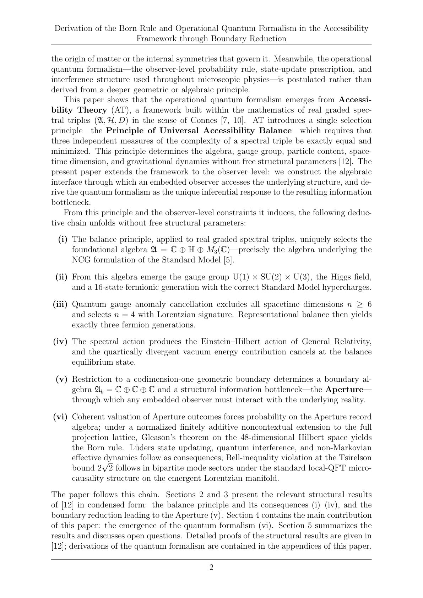
<figcaption class="paper-figure-caption"><b>Fig 1.</b> Low-resolution page preview, page 2</figcaption>
</figure>
<figure class="paper-figure-card">
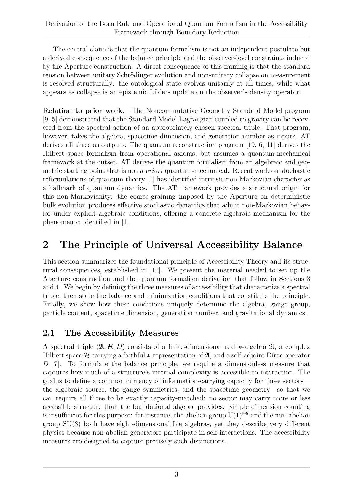
<figcaption class="paper-figure-caption"><b>Fig 2.</b> Low-resolution page preview, page 3</figcaption>
</figure>
<figure class="paper-figure-card">
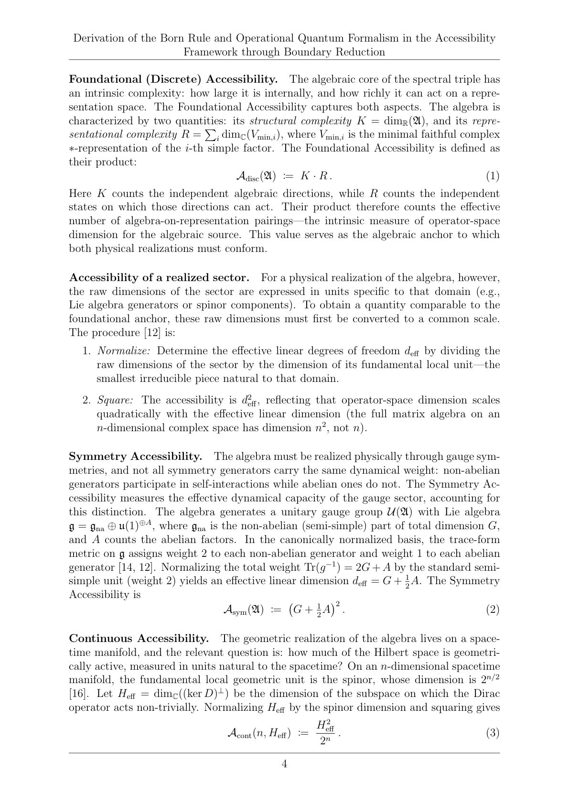
<figcaption class="paper-figure-caption"><b>Fig 3.</b> Low-resolution page preview, page 4</figcaption>
</figure>
<figure class="paper-figure-card">
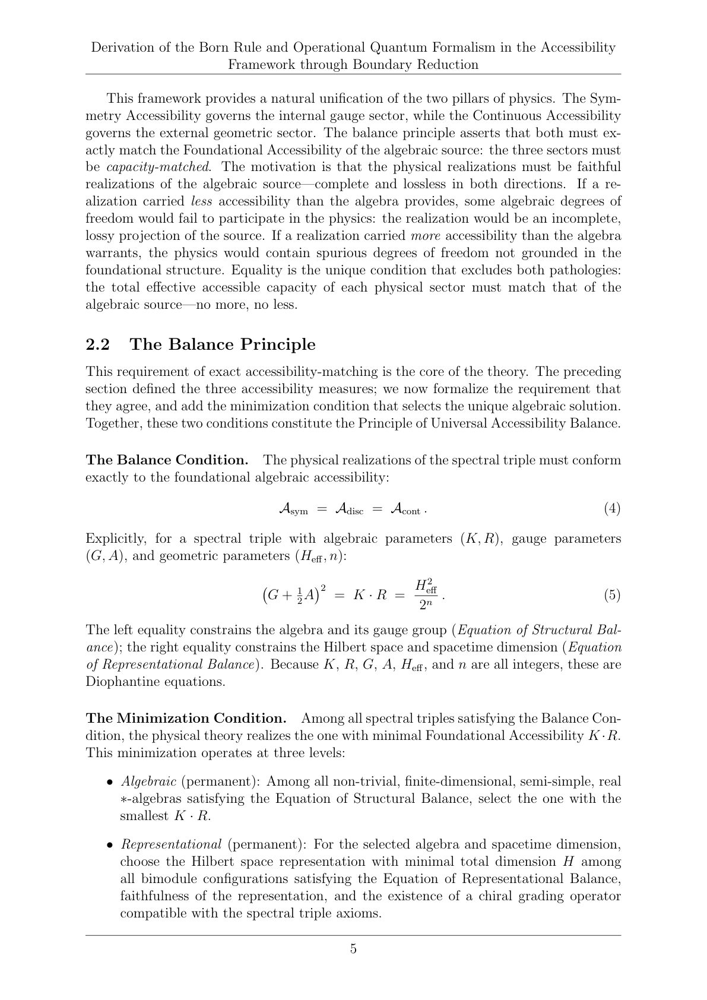
<figcaption class="paper-figure-caption"><b>Fig 4.</b> Low-resolution page preview, page 5</figcaption>
</figure>
<figure class="paper-figure-card">
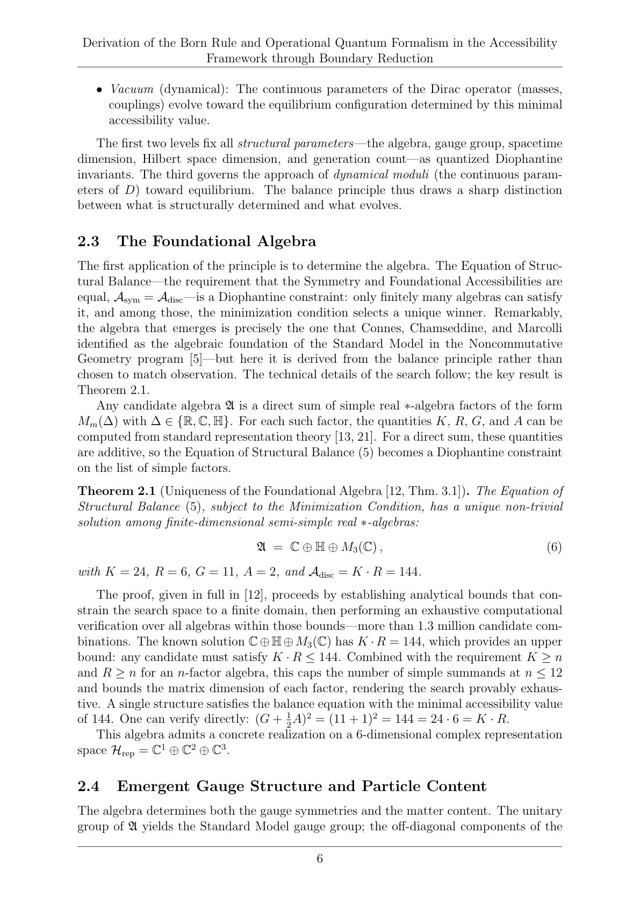
<figcaption class="paper-figure-caption"><b>Fig 5.</b> Low-resolution page preview, page 6</figcaption>
</figure>
<figure class="paper-figure-card">
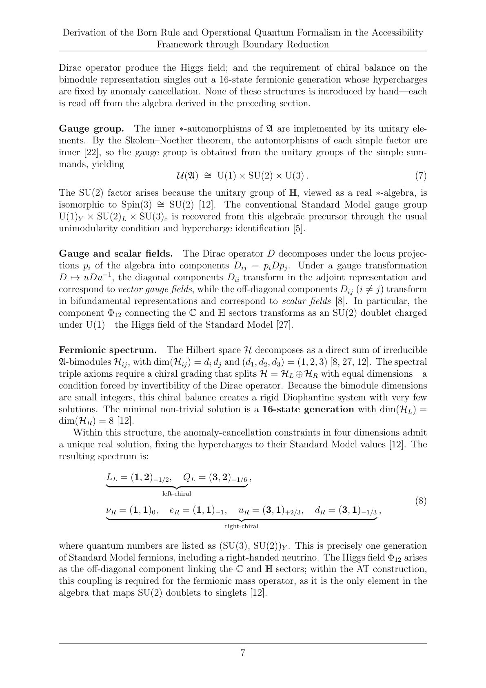
<figcaption class="paper-figure-caption"><b>Fig 6.</b> Low-resolution page preview, page 7</figcaption>
</figure>
<figure class="paper-figure-card">
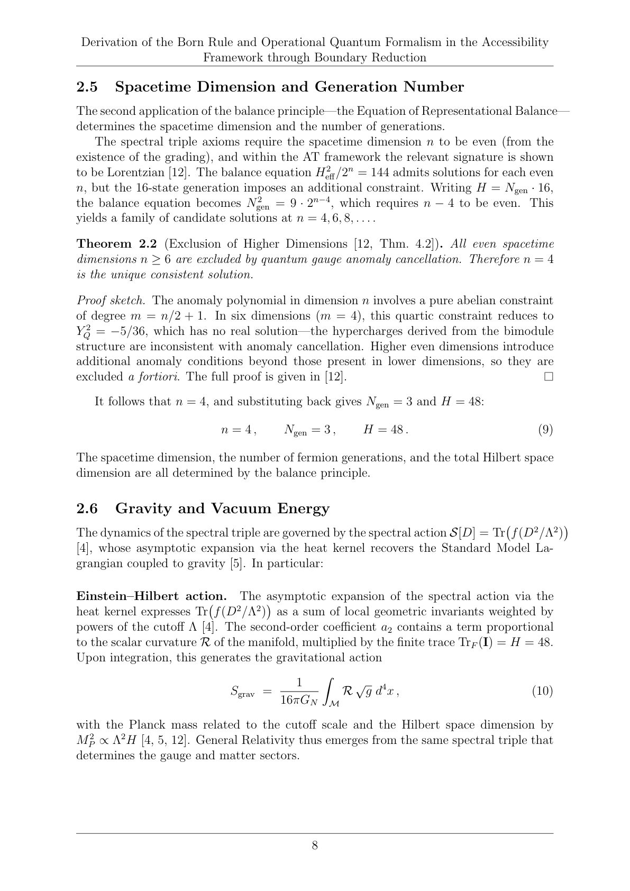
<figcaption class="paper-figure-caption"><b>Fig 7.</b> Low-resolution page preview, page 8</figcaption>
</figure>
<figure class="paper-figure-card">
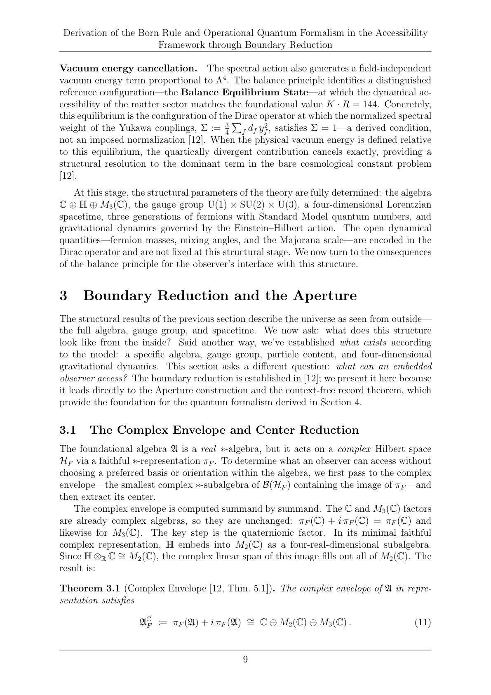
<figcaption class="paper-figure-caption"><b>Fig 8.</b> Low-resolution page preview, page 9</figcaption>
</figure>
<figure class="paper-figure-card">
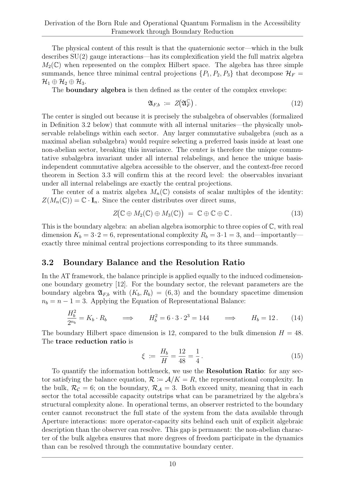
<figcaption class="paper-figure-caption"><b>Fig 9.</b> Low-resolution page preview, page 10</figcaption>
</figure>
<figure class="paper-figure-card">
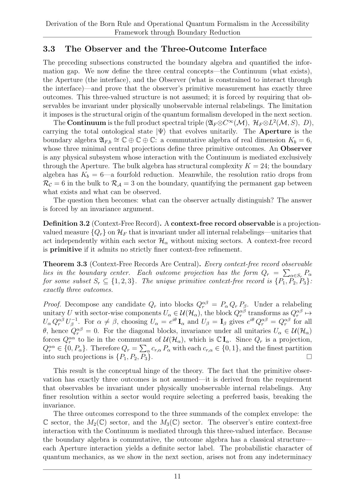
<figcaption class="paper-figure-caption"><b>Fig 10.</b> Low-resolution page preview, page 11</figcaption>
</figure>
</div>

<p><strong>Summary.</strong> This paper proposes that quantum mechanics is an epistemic consequence of an observer's limited access to a more complex, deterministic algebraic reality. By applying a 'Balance Principle' to spectral triples, the authors derive the Standard Model's gauge group and spacetime dimension, while simultaneously deriving the Born rule as a result of an information bottleneck at the observer's interface.</p>
<p><strong>Why it may be interesting.</strong> This is highly relevant for researchers in open quantum systems as it provides a structural, algebraic derivation of non-Markovian dynamics and the emergence of probabilistic, non-unitary evolution from an underlying deterministic, unitary ontology.</p>
<details><summary>Detailed structure</summary>

**Main problem.** The paper seeks to derive the fundamental operational features of quantum mechanics (the Born rule, state updating, and interference) and the parameters of the Standard Model from a single, deeper algebraic principle.

**Main result.** The authors show that the Born rule and quantum formalism emerge from an 'Aperture'—a structural information bottleneck created by boundary reduction in Accessibility Theory—while the Standard Model parameters are uniquely selected by a 'Balance Principle'.

**Method.** The study employs Noncommutative Geometry (NCG) techniques, specifically using spectral triples, boundary reduction of algebras, Gleason's theorem, and Diophantine analysis to solve for complexity constraints.

**Model / system.** The framework is 'Accessibility Theory' (AT), which models an observer interacting with a deterministic, unitary 'Continuum' through a commutative, three-outcome 'Aperture' interface derived from a real graded spectral triple.

**Key observables.** Aperture record process (sequence of sector labels), transition effect operators, and context-free records.

**Important parameters / regimes.** Spacetime dimension (n=4), number of fermion generations (Ngen=3), algebraic complexity (A_disc=144), and the trace reduction ratio (xi=1/4).

**Assumptions / limitations.** Assumes the validity of spectral triple axioms, the Principle of Universal Accessibility Balance, and specific observer-level coherence commitments such as noncontextuality and linearity.

**Paper structure.** The paper begins by establishing the Accessibility Theory framework and the Balance Principle to select the Standard Model algebra; it then uses boundary reduction to define the Aperture; subsequently, it applies Gleason's theorem and algebraic constraints to derive the Born rule and quantum dynamics; finally, it discusses the emergence of non-Markovianity and the resolution of the measurement problem.

</details>

<details><summary>Abstract</summary>

We show that the operational quantum formalism -- the Born rule, Lüders state updating, quantum interference, non-Markovian effective dynamics, and Bell inequality violation at the Tsirelson bound \(2\sqrt{2}\) -- arises within Accessibility Theory (AT) from the Aperture construction together with explicit coherence and locality assumptions stated in the paper. AT is a framework built on real graded spectral triples and a single algebraic selection principle. The Principle of Universal Accessibility Balance requires three independent measures of the complexity of a spectral triple -- its algebraic, gauge-theoretic, and geometric content -- to be exactly equal and minimized, uniquely selecting the algebra \(\C \oplus \Hbb \oplus M_3(\C)\) and with it the Standard Model gauge group, particle content, four-dimensional Lorentzian spacetime, three generations, and gravitational dynamics. Restriction to a codimension-one geometric boundary reduces this algebra to its commutative center \(\C \oplus \C \oplus \C\) -- the Aperture -- which defines a permanent information bottleneck for any embedded observer. Coherence conditions on inference through this bottleneck, together with Gleason's theorem on the 48-dimensional internal Hilbert space, uniquely determine the Born rule; the remaining operational features follow from the same observer-level framework under the stated assumptions. At the ontological level the theory is deterministic and state-realist, while the operational quantum formalism appears at the observer level as a consequence of structurally limited access to the underlying algebraic reality.

</details>

<p><sub><a href="#top">↑ back to top</a></sub></p>

<p><a id="paper-2604.27459"></a></p>
<h3 id="galilean-boost-invariance-does-not-survive-the-trace-symmetry-breaking-in-open-quantum-systems"><a href="http://arxiv.org/abs/2604.27459v1">Galilean boost invariance does not survive the trace: symmetry breaking in open quantum systems</a></h3>
<p><strong>Authors:</strong> Leonardo F. Calderón, Esteban Marulanda, Santiago Morales, Leonardo A. Pachón<br>
<strong>Type:</strong> theory · <strong>Category:</strong> other · <strong>PDF:</strong> <a href="https://arxiv.org/pdf/2604.27459v1">https://arxiv.org/pdf/2604.27459v1</a><br>
<strong>Analysis basis:</strong> full PDF text, analyzed in chunks
<strong>Topic relevance:</strong> <code>Keldysh / 2PI / non-Gaussian methods</code> <strong>3/5</strong> · <code>methods for driven-dissipative</code> <strong>3/5</strong> · <code>non-equilibrium dynamics</code> <strong>2/5</strong> · <code>analog quantum simulation</code> <strong>1/5</strong></p>
<div class="figure-strip-hint">↔ Scroll figures horizontally</div>
<div class="paper-figures-scroll">
<figure class="paper-figure-card">
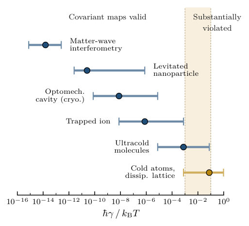
<figcaption class="paper-figure-caption"><b>Fig 1.</b> FIG. 1. Dimensionless boost-violation parameter ℏγ/kBT across representative open-quantum-system platforms in the high-temperature Ohmic regime. Markers indicate representa- tive values quoted in the text; horizontal bars span the experi- mental ranges of γ and T [17, 31–35]. The shaded band delin- eates the crossover between the decoherence-dominated regime (left, covariant maps serve as an excellent approximation) and the dissipation-dominated regime (right, where Eq. (8) attains quantitative significance). Cold atoms in dissipative optical lat- tices span the crossover and enter the violated regime; ultra- cold molecules reach its lower edge. Bars cap at ℏγ/kBT = 1, beyond which the...</figcaption>
</figure>
</div>

<p><strong>Summary.</strong> This paper proves that tracing out a Galilean-invariant environment breaks the boost covariance of the resulting reduced dynamics due to the dissipative term in the master equation. It establishes that this symmetry breaking is unavoidable in any system obeying the fluctuation-dissipation theorem, though it can be suppressed through parametric driving. The work provides a scale, defined by the ratio of damping to temperature, to predict where this violation becomes experimentally significant.</p>
<p><strong>Why it may be interesting.</strong> It identifies a fundamental kinematic obstruction in open quantum systems, showing that dissipation and boost invariance are mutually exclusive in standard models, which has direct implications for the validity of covariant approximations in cold atom and optomechanical experiments.</p>
<details><summary>Detailed structure</summary>

**Main problem.** The paper investigates whether Galilean boost invariance is preserved in the reduced dynamics of an open quantum system after tracing out the environment.

**Main result.** The authors demonstrate a 'no-go' result: for bilinearly coupled systems, Galilean boost covariance is broken by the dissipative term of the master equation, and this violation cannot be avoided if the fluctuation-dissipation theorem holds.

**Method.** The study uses an operator-level analysis of the exact Hu-Paz-Zhang master equation, algebraic testing of symmetry transformations, and stochastic decomposition of the influence functional.

**Model / system.** The analysis focuses on the Caldeira-Leggett model, featuring a system particle coupled to a bath of harmonic oscillators via bilinear-coordinate interaction.

**Key observables.** The dissipative anticommutator term, damping coefficient Gamma(t)f(t), and the boost-breaking phase.

**Important parameters / regimes.** The dimensionless ratio hbar*gamma/k_B*T, which defines the crossover between negligible and substantial symmetry violation, and the squeezing rate mu.

**Assumptions / limitations.** The analysis assumes a factorized initial condition and focuses on the quadratic regime, though extensions to non-quadratic potentials are conjectured via stochastic decomposition.

**Figures summary.** Figure 1 provides a survey of the dimensionless boost-violation parameter across various quantum platforms, showing a crossover from covariant regimes (e.g., trapped ions, nanoparticles) to violated regimes (e.g., cold atoms in optical lattices).

**Paper structure.** The paper begins by defining the global Galilean-invariant model, proceeds to an algebraic analysis of the master equation to locate the symmetry breaking, explores the fundamental conflict with the fluctuation-dissipation theorem, and concludes by discussing experimental platforms and potential restoration via parametric driving.

</details>

<details><summary>Abstract</summary>

Tracing out a Galilean-invariant Caldeira-Leggett environment breaks Galilean boost covariance of the reduced dynamics, while spatial translations and rotations survive intact. An operator-level analysis of the exact Hu-Paz-Zhang master equation localizes the violation entirely in the dissipative anticommutator term, scaling with the damping coefficient $Γ(t)f(t)$. The fluctuation-dissipation theorem ties this coefficient to the absorptive bath response that drives equilibrium momentum diffusion, so for any non-trivial bath spectral density bilinear-coupled Galilean invariance, the fluctuation-dissipation theorem, and reduced boost covariance cannot hold simultaneously. The stochastic decomposition of the influence functional extends the mechanism beyond the quadratic regime. The dimensionless ratio $\hbarγ/k_\mathrm{B} T$ delineates the crossover: cold atoms in dissipative optical lattices and ultracold molecules sit at its edge. Parametric driving offers a one-directional escape: the squeezing rate that protects nonequilibrium entanglement above the standard quantum limit also suppresses boost-breaking over a driving cycle.

</details>

<p><sub><a href="#top">↑ back to top</a></sub></p>

<p><a id="paper-2604.27838"></a></p>
<h3 id="heisenberg-limited-hamiltonian-learning-without-short-time-control"><a href="http://arxiv.org/abs/2604.27838v1">Heisenberg-limited Hamiltonian learning without short-time control</a></h3>
<p><strong>Authors:</strong> Myeongjin Shin, Junseo Lee, Changhun Oh<br>
<strong>Type:</strong> theory · <strong>Category:</strong> quantum information and computing · <strong>PDF:</strong> <a href="https://arxiv.org/pdf/2604.27838v1">https://arxiv.org/pdf/2604.27838v1</a><br>
<strong>Analysis basis:</strong> full PDF text, analyzed in chunks
<strong>Topic relevance:</strong> <code>analog quantum simulation</code> <strong>3/5</strong> · <code>entanglement &amp; information structure</code> <strong>2/5</strong> · <code>non-equilibrium dynamics</code> <strong>2/5</strong> · <code>quantum measurements</code> <strong>2/5</strong></p>
<div class="figure-strip-hint">↔ Scroll figures horizontally</div>
<div class="paper-figures-scroll">
<figure class="paper-figure-card">
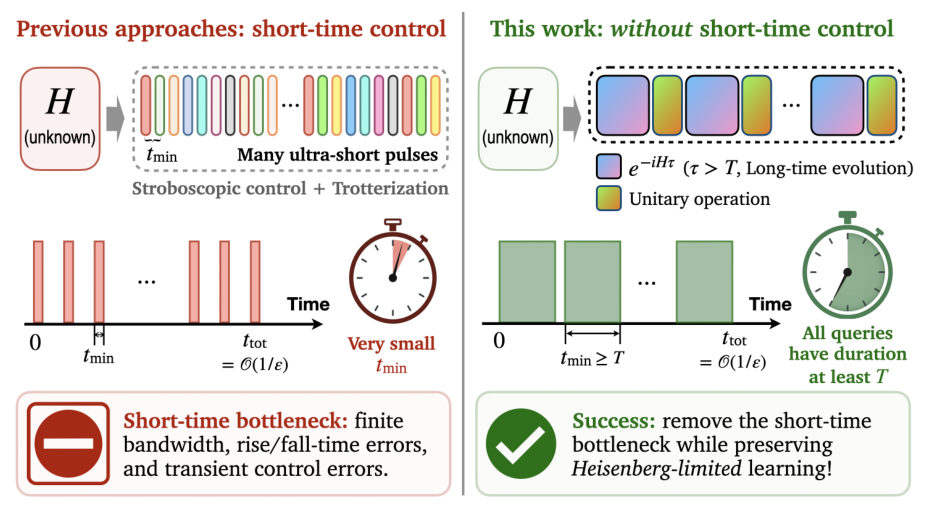
<figcaption class="paper-figure-caption"><b>Fig 1.</b> Figure 1. Comparison between previous short-time control approaches and our framework. Previous Heisenberg- limited algorithms rely on stroboscopic control and Trotterization, requiring many ultra-short evolution segments with small 𝑡min. Our framework replaces these short-time queries by long-time evolutions interleaved with learned auxiliary operations, ensuring that every query to the unknown Hamiltonian has duration at least 𝑇. Thus, the short-time bottleneck is removed while Heisenberg-limited scaling in total evolution time is retained.</figcaption>
</figure>
<figure class="paper-figure-card">
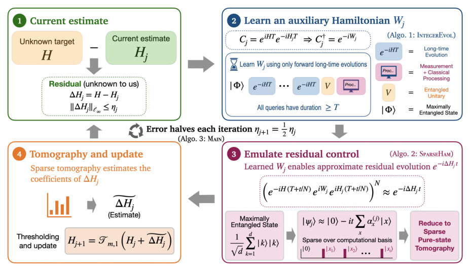
<figcaption class="paper-figure-caption"><b>Fig 2.</b> Figure 2. Schematic overview of our iterative learning protocol. At iteration 𝑗, the current estimate 𝐻𝑗 defines a residual Hamiltonian Δ𝐻𝑗= 𝐻−𝐻𝑗. We first learn an auxiliary Hamiltonian 𝑊𝑗using only long-time evolutions under 𝐻, and then use 𝑊𝑗to emulate the residual-control primitive 𝑒−𝑖Δ𝐻𝑗𝑡. This emulated evolution reduces coefficient extraction to sparse pure-state tomography. After estimating Δ𝐻𝑗, we update and truncate the estimate to obtain 𝐻𝑗+1, preserving 𝑚-sparsity and bounded norm while halving the error.</figcaption>
</figure>
</div>

<p><strong>Summary.</strong> This paper demonstrates that optimal, Heisenberg-limited Hamiltonian learning can be performed even when experimental constraints prevent the use of very short-time pulses. By using a method to emulate continuous control through longer evolution periods and learned corrections, the authors show that high-bandwidth control is not a fundamental requirement for efficient quantum system characterization.</p>
<p><strong>Why it may be interesting.</strong> This is highly relevant for many-body dynamics and quantum control because it proves that the experimental difficulty of generating ultra-short, high-bandwidth pulses does not fundamentally prevent achieving the most efficient possible learning of a system's underlying physics.</p>
<details><summary>Detailed structure</summary>

**Main problem.** Determining whether Heisenberg-limited Hamiltonian learning (achieving 1/epsilon scaling in total evolution time) is possible when access to arbitrarily short-time dynamics is restricted by a minimum evolution time T.

**Main result.** The authors prove that Heisenberg-limited scaling can be achieved without short-time control, resolving an open problem. They establish that for logarithmically sparse Hamiltonians, any constant T is sufficient, while for polynomially sparse systems, a quantitative tradeoff exists between minimum evolution time and total evolution time.

**Method.** The framework emulates continuous quantum control by replacing short-time Trotter steps with long-time queries to the unknown Hamiltonian interleaved with learned correction unitaries. The task is then reduced to sparse pure-state tomography.

**Model / system.** An n-qubit, m-sparse, traceless Hamiltonian H expressed as a sum of Pauli operators with unknown real coefficients.

**Key observables.** Pauli coefficients of the Hamiltonian, total evolution time, and error in the Hamiltonian estimate (l-infinity norm).

**Important parameters / regimes.** m (sparsity), T (minimum evolution time), epsilon (target accuracy), and n (number of qubits).

**Assumptions / limitations.** The Hamiltonian is assumed to be m-sparse in the Pauli basis and traceless; the algorithm assumes the ability to simulate the known part of the Hamiltonian and perform sparse pure-state tomography.

**Figures summary.** Figure 1 compares previous approaches relying on stroboscopic control/Trotterization with small minimum evolution times against the new framework using long-time evolutions and learned auxiliary operations.

**Paper structure.** The paper introduces the short-time bottleneck problem, defines the Hamiltonian model and sparsity regimes, presents the long-time emulation framework and correction generator learning, provides mathematical proofs for logarithmic and polynomial sparsity regimes, and concludes with the implications for quantum learning.

</details>

<details><summary>Abstract</summary>

Characterizing quantum systems by learning their underlying Hamiltonians is a central task in quantum information science. While recent algorithmic advances have achieved near-optimal efficiency in this task, they critically rely on accessing arbitrarily short-time dynamics. This reliance poses severe experimental challenges due to finite control bandwidth and transient pulse errors. In this work, we demonstrate that Heisenberg-limited Hamiltonian learning can be achieved without short-time control. We introduce a framework in which every query to the unknown dynamics has duration at least a prescribed minimum time $T$, and show that this restriction does not preclude Heisenberg-limited scaling. The key ingredient is a method for emulating the continuous quantum control required by iterative learning algorithms using only such lower-bounded evolution times. This reduces the learning task to sparse pure-state tomography. Notably, for logarithmically sparse Hamiltonians, our algorithm achieves the information-theoretically optimal $1/\varepsilon$ scaling in total evolution time for any arbitrary constant minimum evolution time $T$. For many-body (polynomially sparse) systems, we uncover a rigorous quantitative tradeoff, showing that the minimum required evolution time can be significantly relaxed from the standard limit at a polynomial cost in total evolution time. Our results affirmatively resolve a prominent open problem in the field and reveal that high-bandwidth, ultra-short pulses are not fundamentally necessary for optimal quantum learning.

</details>

<p><sub><a href="#top">↑ back to top</a></sub></p>

<p><a id="paper-2604.27220"></a></p>
<h3 id="multirate-characterization-of-relaxation-mechanisms-for-two-nonequivalent-nuclear-spins-12-in-a-liquid-using-maximally-entangled-pseudo-pure-quantum-states"><a href="http://arxiv.org/abs/2604.27220v1">Multirate characterization of relaxation mechanisms for two nonequivalent nuclear spins 1/2 in a liquid using maximally entangled pseudo-pure quantum states</a></h3>
<p><strong>Authors:</strong> Georgiy Baroncha, Alexander Perepukhov, Boris V. Fine<br>
<strong>Type:</strong> both · <strong>Category:</strong> quantum information and computing · <strong>PDF:</strong> <a href="https://arxiv.org/pdf/2604.27220v1">https://arxiv.org/pdf/2604.27220v1</a><br>
<strong>Analysis basis:</strong> abstract only; PDF text extraction failed or PDF unavailable
<strong>Topic relevance:</strong> <code>QC/QI experiment</code> <strong>3/5</strong> · <code>correlated / nonlocal dissipation</code> <strong>2/5</strong> · <code>entanglement &amp; information structure</code> <strong>2/5</strong> · <code>non-equilibrium dynamics</code> <strong>1/5</strong> · <code>quantum measurements</code> <strong>1/5</strong></p>
<p><strong>Summary.</strong> The paper presents a method to simultaneously measure eight different relaxation rates in a two-spin NMR system using entangled Bell states. It identifies a universal ratio for diagonal relaxation rates and reveals an unconventional relaxation mechanism caused by weak couplings to distant spins. This approach provides a powerful tool for fingerprinting complex molecular dynamics.</p>
<p><strong>Why it may be interesting.</strong> This work is highly relevant to open quantum systems as it demonstrates the ability to selectively initialize and characterize the eigenmodes of off-diagonal relaxation using entangled states, providing insight into complex decoherence mechanisms.</p>
<details><summary>Detailed structure</summary>

**Main problem.** The study aims to characterize multiple relaxation mechanisms in a two-spin system by accessing both diagonal and off-diagonal elements of the density matrix.

**Main result.** The authors successfully accessed 8 relaxation rates using Bell pseudo-pure states and identified a universal dimensionless ratio of diagonal relaxation rates determined by intra-pair magnetic dipolar interaction.

**Method.** The researchers used a multirate NMR approach, employing a new method based on a detuned Hartmann-Hahn double resonance condition to create maximally entangled Bell pseudo-pure states (Bell PPSs).

**Model / system.** A system of two non-equivalent nuclear spins 1/2 (1H and 13C) belonging to a molecule in a liquid, stable against chemical exchange.

**Key observables.** 8 relaxation rates, including inversion recovery, nuclear Overhauser effect, and off-diagonal relaxation rates.

**Important parameters / regimes.** dimensionless ratio of diagonal relaxation rates, J-couplings with distant nuclear spins, and intra-pair magnetic dipolar interaction.

**Assumptions / limitations.** The nuclear spin pair is stable with respect to chemical exchange.

**Paper structure.** The paper presents an experimental and theoretical investigation of spin relaxation, introducing a method for Bell PPS creation, demonstrating the selective initialization of relaxation eigenmodes, and providing a microscopic theory validated by parameter-free tests.

</details>

<details><summary>Abstract</summary>

Multirate characterization of spin responses in nuclear magnetic resonance (NMR) is a promising approach to fingerprinting complex molecules in the presence of multiple relaxation mechanisms. Here we present experimental and theoretical investigations simultaneously accessing 8 relaxation rates describing the density matrix of two adjacent non-equivalent nuclear spins 1/2 ($^1$H and $^{\ 13}$C) belonging to a molecule in a liquid. The selected nuclear pair is stable with respect to chemical exchange. Some of the rates are obtained from conventional measurements of inversion recovery and nuclear Overhauser effect, while other, less conventional ones, are extracted from the relaxation initialized by the maximally entangled pseudo-pure Bell states (Bell PPSs) of the spin pair. The Bell PPSs are created using a hereby introduced method based on a detuned Hartmann-Hahn double resonance condition. Microscopic theory behind the measured relaxation rates is presented, and its consistency is demonstrated by several parameter-free tests. In particular, it is shown both theoretically and experimentally, that the eigenmodes of the off-diagonal relaxation of the two-spin density matrix can be selectively initialized using Bell PPSs. Our multirate analysis suggests that the measured off-diagonal relaxation is partly due to an unconventional mechanism arising from very weak $J$-couplings of the spin pair with fluctuating distant nuclear spins. Furthermore, we identify a dimensionless ratio of diagonal relaxation rates, which is determined exclusively by intra-pair magnetic dipolar interaction and hence possesses a universal value for a broad class of nuclear spin pairs. This value is consistent with both our experiments and other experiments reported in the literature.

</details>

<p><sub><a href="#top">↑ back to top</a></sub></p>

<p><a id="paper-2604.27648"></a></p>
<h3 id="effective-noise-mitigation-via-quantum-circuit-learning-in-quantum-simulation-of-integrable-spin-chains"><a href="http://arxiv.org/abs/2604.27648v1">Effective Noise Mitigation via Quantum Circuit Learning in Quantum Simulation of Integrable Spin Chains</a></h3>
<p><strong>Authors:</strong> Wenlong Zhao, Yimeng Zhang, Yan Guo, Yufan Cui, Zhuohang Wang, Rui-Dong Zhu<br>
<strong>Type:</strong> theory · <strong>Category:</strong> quantum information and computing · <strong>PDF:</strong> <a href="https://arxiv.org/pdf/2604.27648v1">https://arxiv.org/pdf/2604.27648v1</a><br>
<strong>Analysis basis:</strong> full PDF text, analyzed in chunks
<strong>Topic relevance:</strong> <code>non-equilibrium dynamics</code> <strong>3/5</strong> · <code>entanglement &amp; information structure</code> <strong>2/5</strong> · <code>methods for driven-dissipative</code> <strong>2/5</strong></p>
<div class="figure-strip-hint">↔ Scroll figures horizontally</div>
<div class="paper-figures-scroll">
<figure class="paper-figure-card">
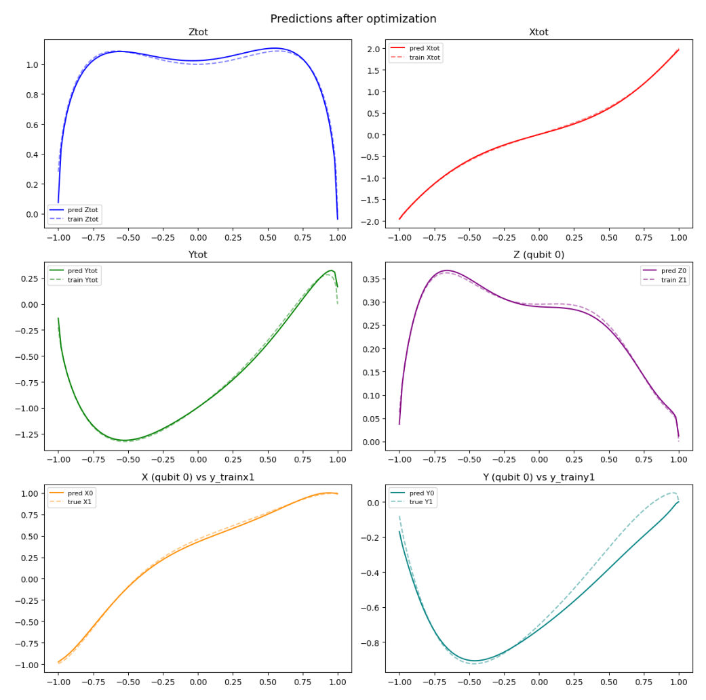
<figcaption class="paper-figure-caption"><b>Fig 1.</b> FIG. 1. Predictions from learned circuit (solid lines) compared with the original data for L = 2 and d = 15 (dashed lines). In particular, the data for ⟨X1⟩and ⟨Y1⟩were not taught to the circuit (n.b. in the quantum simulation, the first qubit is usually called qubit 0). The scaling factor a is optimized to aopt = 1.014819.</figcaption>
</figure>
<figure class="paper-figure-card">
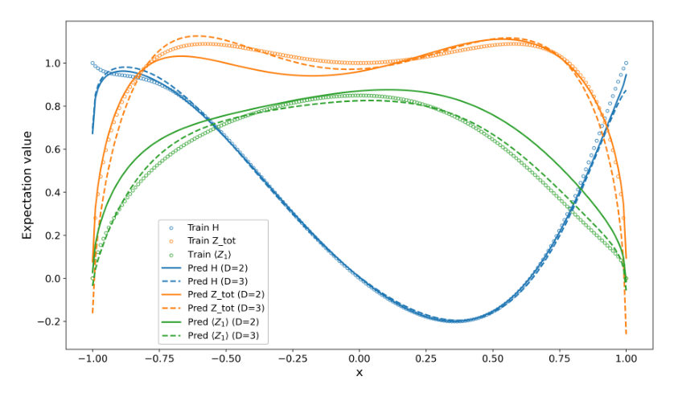
<figcaption class="paper-figure-caption"><b>Fig 2.</b> FIG. 2. Comparison of predictions for the training data, H, Ztot, and the dynamical observable ⟨Z1⟩at d = 4 using QCL with circuit depths D = 2 (solid lines) and D = 3 (dashed lines). Both setups achieve relatively good agreement with the training data, and give similar predictions.</figcaption>
</figure>
<figure class="paper-figure-card">
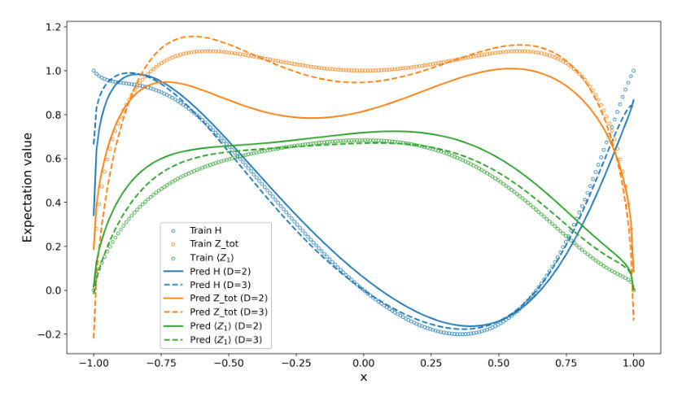
<figcaption class="paper-figure-caption"><b>Fig 3.</b> FIG. 3. Comparison of predictions for the training data, H, Ztot, and the dynamical observable ⟨Z1⟩at d = 6 using QCL with circuit depths D = 2 and D = 3. The predictions of the D = 3 QCL circuit (dashed lines) are clearly better than those of D = 2 circuit, especially for ⟨Ztot⟩.</figcaption>
</figure>
<figure class="paper-figure-card">
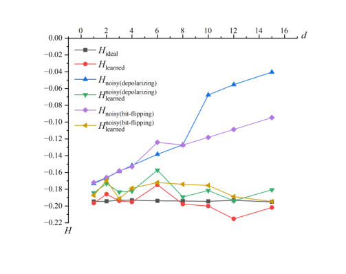
<figcaption class="paper-figure-caption"><b>Fig 4.</b> FIG. 4. Conserved Hamiltonian H at x = 0.3 under bit-flipping (p = 0.5%) and depolarizing (p = 1%) noise. The learned circuit closely follows the ideal curve, while the un- mitigated simulation quickly deviates as the time-evolution depth d increases.</figcaption>
</figure>
<figure class="paper-figure-card">
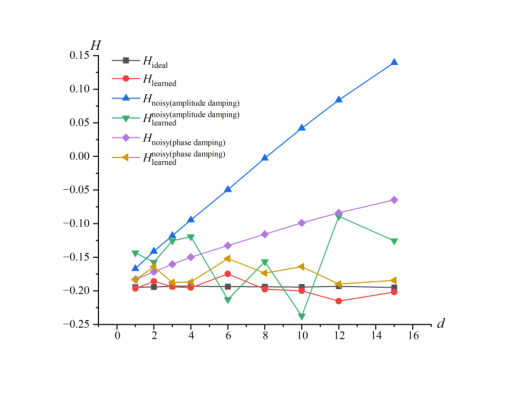
<figcaption class="paper-figure-caption"><b>Fig 5.</b> FIG. 5. Hamiltonian H at x = 0.3 subjected to amplitude damping (p = 1%) and phase damping (p = 1%). The QCL-based noise mitigation effectively suppresses the degra- dation, keeping the predicted values close to the exact con- served quantity.</figcaption>
</figure>
<figure class="paper-figure-card">
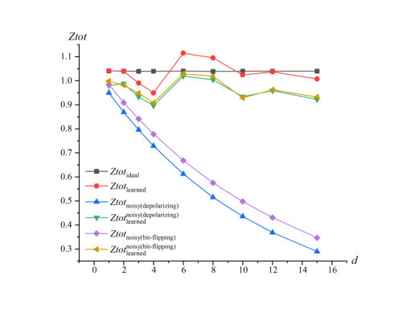
<figcaption class="paper-figure-caption"><b>Fig 6.</b> FIG. 6. Ztot at x = −0.3 under bit-flipping (p = 0.5%) and depolarizing (p = 1%) noise. Again, the learned circuit suc- cessfully limits the noise-induced errors, maintaining the con- served charge much closer to its ideal value than the original time-evolution circuit.</figcaption>
</figure>
<figure class="paper-figure-card">
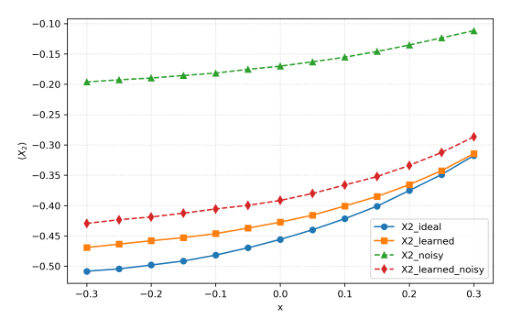
<figcaption class="paper-figure-caption"><b>Fig 7.</b> FIG. 8. Comparison of ⟨X2⟩as a function of x after d = 10 steps of time evolution between the ideal simulation (blue line for the original circuit, orange line for the prediction of QCL circuit) and the noisy simulation (green line for the original circuit, red line for the prediction of QCL circuit) with depo- larizing noise (p = 0.01).</figcaption>
</figure>
<figure class="paper-figure-card">
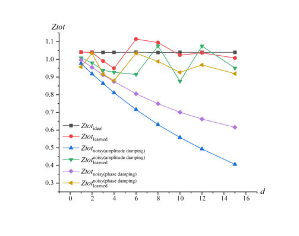
<figcaption class="paper-figure-caption"><b>Fig 8.</b> FIG. 7. Total Z magnetization Ztot at x = −0.3 under ampli- tude and phase damping noise. The learned circuit preserves the constant theoretical value with high accuracy, whereas the unmitigated circuit exhibits a large systematic drift caused by noise.</figcaption>
</figure>
<figure class="paper-figure-card">
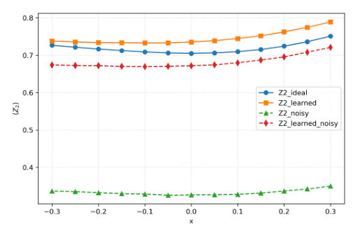
<figcaption class="paper-figure-caption"><b>Fig 9.</b> FIG. 9. Comparison of ⟨Z2⟩as a function of x after d = 10 steps of time evolution between the ideal simulation (blue line for the original circuit, orange line for the prediction of QCL circuit) and the noisy simulation (green line for the original circuit, red line for the prediction of QCL circuit) with bit- flipping noise (p = 0.005).</figcaption>
</figure>
<figure class="paper-figure-card">
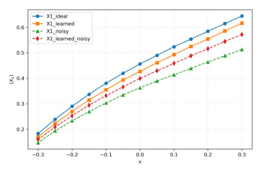
<figcaption class="paper-figure-caption"><b>Fig 10.</b> FIG. 11. Comparison of ⟨X1⟩as a function of x after d = 10 steps of time evolution between the ideal simulation (blue line for the original circuit, orange line for the prediction of QCL circuit) and the noisy simulation (green line for the original circuit, red line for the prediction of QCL circuit) with phase damping noise (p = 0.01).</figcaption>
</figure>
</div>

<p><strong>Summary.</strong> The paper proposes using Quantum Circuit Learning to replace deep, noisy quantum simulation circuits with shallower, learned versions. By training the circuit to respect the conserved charges of integrable spin chains, the method significantly reduces the impact of hardware noise. This approach allows for more robust and accurate simulation of long-time dynamics on near-term quantum hardware.</p>
<p><strong>Why it may be interesting.</strong> This is highly relevant for many-body dynamics as it provides a physics-informed way to extend the reach of NISQ devices by using the inherent symmetries of integrable systems to combat decoherence.</p>
<details><summary>Detailed structure</summary>

**Main problem.** Mitigating hardware noise (decoherence and gate infidelity) in the quantum simulation of integrable spin chains on NISQ devices.

**Main result.** Quantum Circuit Learning (QCL) can produce shallower, noise-resilient circuits that effectively preserve conserved charges and dynamical observables compared to the original deep, noisy circuits.

**Method.** A machine learning framework where a shallow variational circuit is trained to approximate a deeper time-evolution operator by leveraging conserved charges and a small amount of dynamical information as training signals.

**Model / system.** Integrable quantum spin chains, specifically the XXX Heisenberg model, studied for two-qubit and three-qubit systems.

**Key observables.** Conserved charges (total magnetization Z_tot, SU(2) generators, Hamiltonian H) and dynamical observables (expectation values like <Z1>, <X1>, <Y1>).

**Important parameters / regimes.** Circuit depth (D and d), noise probability (p), coupling constant (J), and number of qubits (L).

**Assumptions / limitations.** The method relies on the existence of conserved charges (integrability) and assumes a sufficiently small time step for the Trotterized approximation.

**Figures summary.** Figures compare predictions of learned circuits vs. true data, demonstrate accuracy improvements across different circuit depths, and show the suppression of noise-induced decay in conserved quantities under various noise models (bit-flip, depolarizing, amplitude, and phase damping).

**Paper structure.** The paper introduces the noise mitigation problem, proposes the QCL strategy using integrability, details the circuit architecture and training process, presents numerical results for L=2 and L=3 systems under various noise channels, and discusses scalability and future directions.

</details>

<details><summary>Abstract</summary>

We propose a noise-mitigation quantum simulation strategy for near-term quantum devices based on Quantum Circuit Learning (QCL), which is in particular effective for integrable quantum spin chains. The method trains a shallow variational circuit to approximate a deeper time-evolution circuit by learning the conserved charges and only a small amount of dynamical information in the system. Under realistic noise models, the learned circuit maintains both conserved quantities and dynamical observables significantly closer to their true values than the noisy simulation of the original circuit. This demonstrates QCL as an effective, physics-informed error mitigation strategy, producing shorter, more robust circuits without exponential sampling overhead.

</details>

<p><sub><a href="#top">↑ back to top</a></sub></p>

<p><a id="paper-2604.28009"></a></p>
<h3 id="learning-quantum-disentanglement-scheduling-from-reduced-states-via-modular-hybrid-policies"><a href="http://arxiv.org/abs/2604.28009v1">Learning quantum disentanglement scheduling from reduced states via modular hybrid policies</a></h3>
<p><strong>Authors:</strong> Y. -X. Xiao, J. -Z. Han, Z. Zheng, Z. -H. Zhang, M. Xue, J. Li, X. Lv<br>
<strong>Type:</strong> theory · <strong>Category:</strong> quantum information and computing · <strong>PDF:</strong> <a href="https://arxiv.org/pdf/2604.28009v1">https://arxiv.org/pdf/2604.28009v1</a><br>
<strong>Analysis basis:</strong> abstract only; PDF text extraction failed or PDF unavailable
<strong>Topic relevance:</strong> <code>entanglement &amp; information structure</code> <strong>3/5</strong> · <code>methods for driven-dissipative</code> <strong>2/5</strong> · <code>quantum measurements</code> <strong>2/5</strong></p>
<p><strong>Summary.</strong> The paper proposes a hybrid quantum-classical machine learning approach to control the disentanglement of multiple qubits using only partial information from reduced density matrices. It reveals that classical preprocessing is crucial for success and provides design principles for scaling the quantum component of the controller.</p>
<p><strong>Why it may be interesting.</strong> This is relevant for researchers in open quantum systems and quantum control as it addresses the practical challenge of managing many-body entanglement using only local, noisy, or incomplete information, which is a hallmark of near-term quantum device operations.</p>
<details><summary>Detailed structure</summary>

**Main problem.** Developing an effective control strategy for multiqubit disentanglement when only partial information (two-qubit reduced density matrices) is available.

**Main result.** The study identifies that classical preprocessing is the primary driver of performance, while the quantum module acts as a compact latent representation; it also finds that increasing circuit width is more effective than increasing depth for policy efficiency.

**Method.** A modular hybrid quantum-classical policy framework involving classical preprocessing, a parameterized quantum circuit (PQC) as a nonlinear latent block, and classical postprocessing for pair-selection probabilities.

**Model / system.** A multi-qubit system (benchmarked on 4, 5, and 6-qubit tasks) undergoing a disentanglement scheduling process controlled by a hybrid agent.

**Key observables.** Two-qubit reduced density matrices and pair-selection probabilities.

**Important parameters / regimes.** Circuit width and circuit depth of the quantum module, and the availability of model budget.

**Assumptions / limitations.** The controller has restricted access to the full wave-function and can only observe reduced density matrices.

**Paper structure.** The paper introduces the problem of partial-observation control, describes the modular hybrid policy architecture, presents benchmarking results across different qubit numbers, and analyzes the performance-efficiency trade-offs and circuit scaling.

</details>

<details><summary>Abstract</summary>

Quantum control with restricted state access is central to near-term quantum devices, where full wave-function information is unavailable. We study this problem through multiqubit disentanglement scheduling from partial observations, where a controller receives only two-qubit reduced density matrices and selects which qubit pair to disentangle at each step. We introduce a modular hybrid quantum--classical policy framework consisting of classical preprocessing, a parameterized quantum circuit as a compact nonlinear latent block, and classical postprocessing for pair-selection probabilities. Benchmarking 4-, 5-, and 6-qubit tasks, we find that preprocessing is the dominant factor governing performance under reduced-state observations, while the quantum module provides a conditional compact representation whose utility depends on the input features and model budget. We further identify a performance--efficiency trade-off across policy families and find that increasing circuit width is generally more useful than increasing depth. These results provide practical design principles for hybrid policies in reduced-information quantum control.

</details>

<p><sub><a href="#top">↑ back to top</a></sub></p>

<p><a id="paper-2604.27173"></a></p>
<h3 id="quantum-coordination-without-conditioning-under-restricted-information"><a href="http://arxiv.org/abs/2604.27173v1">Quantum Coordination without Conditioning under Restricted Information</a></h3>
<p><strong>Authors:</strong> Faisal Shah Khan<br>
<strong>Type:</strong> theory · <strong>Category:</strong> quantum information and computing · <strong>PDF:</strong> <a href="https://arxiv.org/pdf/2604.27173v1">https://arxiv.org/pdf/2604.27173v1</a><br>
<strong>Analysis basis:</strong> full PDF text, analyzed in chunks
<strong>Topic relevance:</strong> <code>entanglement &amp; information structure</code> <strong>3/5</strong> · <code>quantum measurements</code> <strong>3/5</strong></p>
<div class="figure-strip-hint">↔ Scroll figures horizontally</div>
<div class="paper-figures-scroll">
<figure class="paper-figure-card">
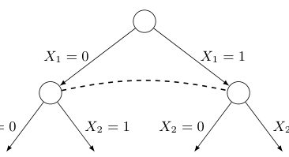
<figcaption class="paper-figure-caption"><b>Fig 1.</b> Fig. 1. Tree representation of the binary illustrative example. The dashed line indicates that the two second-step nodes are indistinguishable under the available information, so the local rule generating X2 cannot depend on the realized value of X1.</figcaption>
</figure>
</div>

<p><strong>Summary.</strong> This paper demonstrates that quantum correlations can enable coordination in sequential tasks where classical agents fail due to an inability to condition on past history. It identifies two distinct quantum mechanisms—shared latent variables and quantum discord—that allow for the implementation of otherwise unattainable joint distributions. Ultimately, it positions quantum correlations as a partial substitute for the classical property of perfect recall.</p>
<p><strong>Why it may be interesting.</strong> It provides fundamental insights into how quantum resources like discord can compensate for missing information in sequential processes, which is relevant to understanding the limits of quantum control and communication in networked systems.</p>
<details><summary>Detailed structure</summary>

**Main problem.** Investigating whether quantum correlations can implement joint distributions that are classically unattainable when agents are subject to information constraints like imperfect recall.

**Main result.** Quantum systems can act as a partial substitute for perfect recall, using both classical latent-variable encoding in separable states and non-commuting local structures (quantum discord) to achieve coordination impossible for classical local rules.

**Method.** The study uses a probabilistic framework comparing classical local conditional rules against quantum measurements (POVMs) on shared states, applying extensions of Kuhn's theorem to imperfect recall settings.

**Model / system.** A multi-stage sequential decision process involving agents (Alice, Bob, etc.) sharing multipartite quantum states, including both separable/diagonal states and discordant states.

**Key observables.** Target joint distributions (specifically anti-correlated distributions), quantum discord, and local measurement outcomes.

**Important parameters / regimes.** Information constraints (restricted access to past history $Y_k$), presence of quantum discord, and the degree of non-commutativity in local measurement bases.

**Assumptions / limitations.** The model assumes no signaling between agents and that quantum correlations are fixed in advance and cannot reproduce fully adaptive dependence on indistinguishable past outcomes.

**Figures summary.** A tree representation of a binary sequential process where dashed lines indicate nodes that are indistinguishable due to information constraints.

**Paper structure.** The paper introduces the problem of coordination under restricted information, defines the classical and quantum models, proves two theorems regarding diagonal and discordant mechanisms for coordination, and discusses the fundamental limitations of quantum models compared to perfect recall.

</details>

<details><summary>Abstract</summary>

We study coordination under restricted information, where classical local models fail to implement certain correlated distributions because agents cannot condition on past history. We show that quantum systems overcome this limitation even when using only separable states. Both classically diagonal encodings (shared latent variables) and separable states with noncommuting local structure (quantum discord) enable the implementation of joint distributions that are unattainable by any classical local rules under the same information constraints. The quantum advantage arises from enabling latent-variable coordination without requiring agents to condition on the latent variable itself -- a construction that succeeds where no classical local model can. Separable states with nonzero quantum discord provide an alternative mechanism for realizing such coordination. At the same time, quantum models remain strictly limited by the information structure: unlike perfect recall, they cannot reproduce fully adaptive dependence on realized past outcomes that are observationally indistinguishable. Thus, quantum correlations serve as a partial substitute for perfect recall.

</details>

<p><sub><a href="#top">↑ back to top</a></sub></p>

<p><a id="paper-2604.27171"></a></p>
<h3 id="structure-aware-transformers-for-learning-near-optimal-trotter-orderings-with-system-size-generalization-in-1d-heisenberg-hamiltonians"><a href="http://arxiv.org/abs/2604.27171v1">Structure-Aware Transformers for Learning Near-Optimal Trotter Orderings with System-Size Generalization in 1D Heisenberg Hamiltonians</a></h3>
<p><strong>Authors:</strong> Shamminuj Aktar, Reuben Tate, Stephan Eidenbenz<br>
<strong>Type:</strong> theory · <strong>Category:</strong> quantum information and computing · <strong>PDF:</strong> <a href="https://arxiv.org/pdf/2604.27171v1">https://arxiv.org/pdf/2604.27171v1</a><br>
<strong>Analysis basis:</strong> full PDF text, analyzed in chunks
<strong>Topic relevance:</strong> <code>non-equilibrium dynamics</code> <strong>3/5</strong> · <code>analog quantum simulation</code> <strong>2/5</strong> · <code>entanglement &amp; information structure</code> <strong>1/5</strong></p>
<div class="figure-strip-hint">↔ Scroll figures horizontally</div>
<div class="paper-figures-scroll">
<figure class="paper-figure-card">
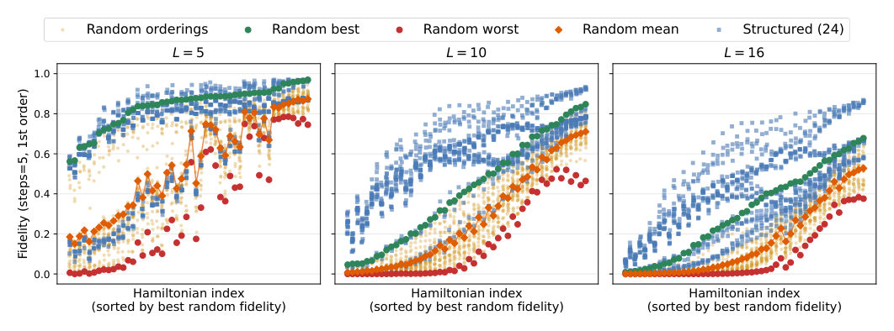
<figcaption class="paper-figure-caption"><b>Fig 1.</b> Figure 1: Fidelity of random and structured Trotter orderings across system sizes L = 5, 10, 16 for the N´eel initial state, first-order product formula, and r = 5 Trotter steps. For each Hamiltonian instance, sorted by best random-ordering fidelity, we show 30 random orderings (amber dots), their best, worst, and mean fidelities (green, red, and orange), and all 24 structured candidates (blue squares). At L = 5, random and structured orderings are often comparable. By L = 10, a clear gap emerges, and at L = 16 the structured candidates consistently occupy the high-fidelity region while random orderings are concentrated lower. This trend shows that structured orderings become increasingly...</figcaption>
</figure>
<figure class="paper-figure-card">
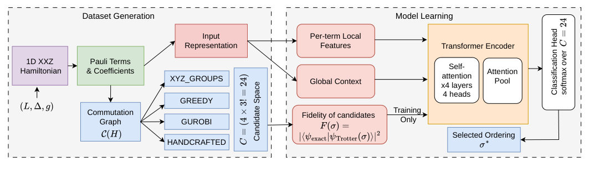
<figcaption class="paper-figure-caption"><b>Fig 2.</b> Figure 2: Overview of the coloring-aware Trotter ordering pipeline, divided into two stages. Dataset generation (left): For a given 1D XXZ Hamiltonian (L, ∆, g), we construct the commutation graph C(H) from Pauli terms and apply four coloring methods (xyz groups, greedy, gurobi, handcrafted), producing C = 24 candidate orderings (4×3! = 24). For each candidate ordering, we compute the fidelity F(σ) = |⟨ψexact|ψTrotter(σ)⟩|2 between the exact and Trotter-evolved states. These fidelities are used during training only: the oracle fidelity, defined as the best fidelity among the 24 structured candidates, provides the supervision label. Model learning (right): Per-term local features and global...</figcaption>
</figure>
<figure class="paper-figure-card">
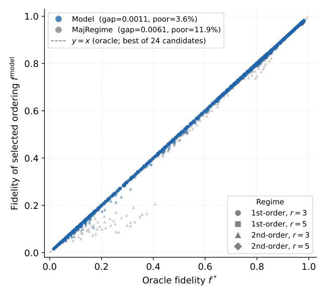
<figcaption class="paper-figure-caption"><b>Fig 3.</b> Figure 3: Selected-ordering fidelity versus oracle fidelity for the learned model and the strongest non-learned baseline, MajRegime, across held-out test instances (L ∈{16, 17, 18, 19, 20}). Points are colored by method and shaped by Trotter regime (p, r), and the dashed line marks oracle-level performance y = x. The learned selector remains more tightly concentrated near the oracle line overall, while MajRegime shows substantially larger deviations, especially in the lower-fidelity regime.</figcaption>
</figure>
<figure class="paper-figure-card">
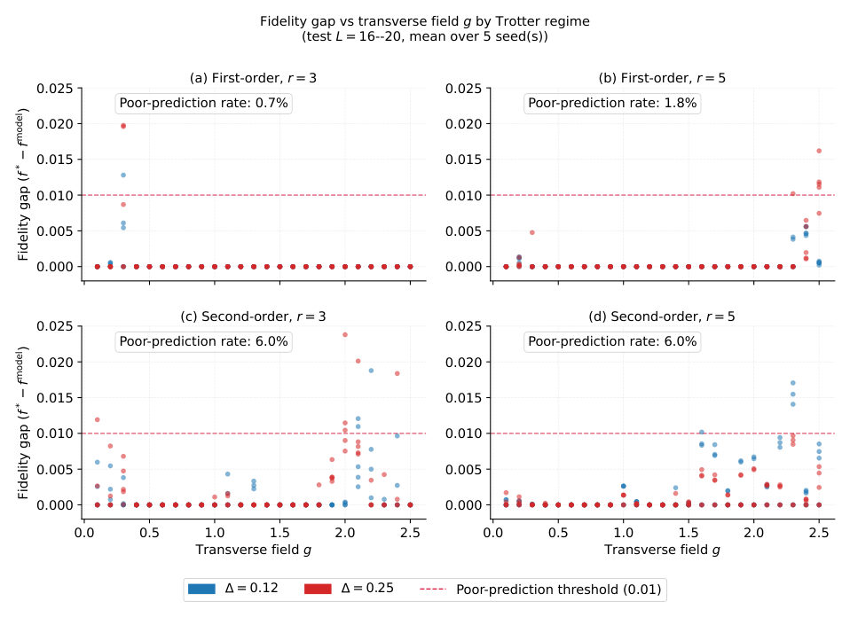
<figcaption class="paper-figure-caption"><b>Fig 4.</b> Figure 4: Error landscape: fidelity gap f∗−f model versus transverse field g for each Trotter regime, averaged over five seeds on test sizes L ∈{16, 17, 18, 19, 20}. Color indicates anisotropy ∆, and the dashed line marks the poor-prediction threshold (gap = 0.01). Under first-order Trotter (top row), the poor-prediction rate remains low at 0.7% for r = 3 and 1.8% for r = 5. Under second-order Trotter (bottom row), failures are more frequent, with poor-prediction rates of 6.0% for r = 3 and 6.0% for r = 5. The largest gaps concentrate at g ≳2.0, where oracle fidelity is already low and differences between candidate orderings become more pronounced.</figcaption>
</figure>
<figure class="paper-figure-card">
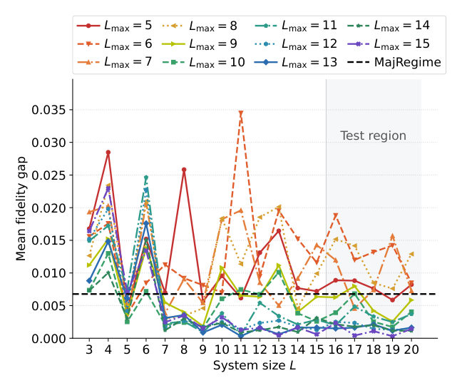
<figcaption class="paper-figure-caption"><b>Fig 5.</b> Figure 5: Generalization sweep. Mean fidelity gap versus system size L for each validation size Lmax ∈{5, . . . , 15}, where training uses L ∈{3, . . . , Lmax −1} and evaluation is performed on larger sizes up to L = 20 (one line per Lmax, mean over three seeds). The shaded region marks the final held-out test range L ∈{16, . . . , 20}, and the dashed horizontal line marks the MajRegime reference. Lines for Lmax ≤8 remain near 10−2 on larger systems, indicating limited generalization. Generalization emerges at Lmax = 9, and lines for Lmax ≥13 compress toward 10−3 with little growth across system size, confirming clean extrapolation to larger systems.</figcaption>
</figure>
<figure class="paper-figure-card">
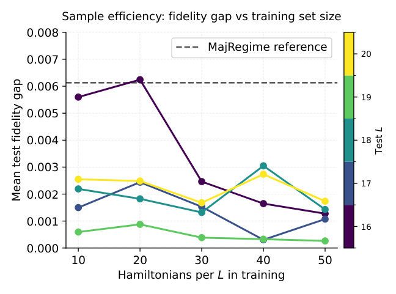
<figcaption class="paper-figure-caption"><b>Fig 6.</b> Figure 6: Sample efficiency: mean test fidelity gap versus the number of Hamiltonians per system size used in training. Colored lines show held-out test sizes L ∈{16, 17, 18, 19, 20}, and the dashed line marks the average MajRegime reference. By nham = 30, all plotted test sizes fall below the MajRegime reference and stabilize thereafter, indicating that 30 Hamiltonians per system size are sufficient for near-oracle generalization in this setting.</figcaption>
</figure>
</div>

<p><strong>Summary.</strong> The paper presents a Transformer-based machine learning model designed to select the most accurate sequence of Hamiltonian terms for Trotterized quantum simulations. By using a size-invariant input representation, the model successfully generalizes from small training systems to much larger, unseen 1D Heisenberg chains. This approach significantly outperforms standard baseline policies and reduces the computational overhead of finding optimal simulation parameters.</p>
<p><strong>Why it may be interesting.</strong> This work is highly relevant for many-body dynamics as it provides an AI-driven method to reduce approximation errors in quantum simulations, potentially enabling more accurate long-time evolution of complex spin systems on near-term quantum hardware.</p>
<details><summary>Detailed structure</summary>

**Main problem.** Optimizing the ordering of non-commuting Hamiltonian terms in Trotterization to maximize simulation fidelity, specifically addressing the exponential complexity of the search space and the need for system-size generalization.

**Main result.** A structure-aware Transformer encoder can predict near-optimal Trotter orderings for unseen, larger systems (up to 20 qubits) with a mean fidelity gap of only 0.00115 relative to the best of 24 structured candidates.

**Method.** The authors use a supervised learning approach with a Transformer encoder that takes size-invariant Hamiltonian features and global context as input to classify the best ordering from a predefined set of 24 candidates derived from commutation graph colorings.

**Model / system.** The study focuses on 1D XXZ Heisenberg Hamiltonians with an external transverse field, decomposed into local Pauli terms, using the Néel state as the initial state for time evolution.

**Key observables.** State fidelity (squared overlap between exact and Trotter-evolved states), mean fidelity gap, normalized gain, and poor-prediction rate.

**Important parameters / regimes.** System size (L), Trotter orders (p=1, 2), step counts (r=3, 5), anisotropy (Delta), and transverse field strength (g).

**Assumptions / limitations.** The search is restricted to a predefined set of 24 structured candidate orderings rather than the full permutation space; the study is limited to 1D XXZ Hamiltonians and a fixed target time.

**Figures summary.** Figure 1 compares random vs. structured orderings; Figure 2 shows the dataset generation and model learning pipeline; Figure 3 shows the model tracking the oracle fidelity; Figure 4 shows the error landscape across field strengths; Figure 5 shows the generalization sweep across system sizes; Figure 6 shows sample efficiency.

**Paper structure.** The paper introduces the Trotter ordering problem, describes the construction of the candidate set via commutation graph coloring, details the Transformer architecture and size-invariant feature encoding, presents results on system-size generalization and sample efficiency, and concludes with limitations and future directions.

</details>

<details><summary>Abstract</summary>

Trotterization is a standard approach for simulating quantum time evolution on quantum computers, where the Hamiltonian is split into local terms and each term is applied in sequence. The order of these terms affects the fidelity of the simulation when they do not commute, so the choice of ordering directly impacts the accuracy of the simulation. We study this problem for one-dimensional XXZ Heisenberg Hamiltonians using a structured set of 24 candidate orderings derived from colorings of the Hamiltonian's commutation graph and their group permutations. Finding the best candidate for large systems becomes prohibitive because fidelity evaluation is computationally expensive. In this work, we train a transformer encoder on smaller systems to predict the best candidate ordering for larger systems directly from Hamiltonian and Trotter-configuration features, without computing candidate fidelities at inference time. The model is trained on in-range systems of 3 to 14 qubits with 15-qubit systems held out for validation. Experimental results show that the model reaches a mean test fidelity gap of 0.00115 relative to the best of the 24 candidates on out-of-range systems of 16 to 20 qubits. A training-size sweep further shows that generalization emerges once training includes systems up to L=8 qubits, with validation at L=9, and the gap continues to decrease as the training range grows. To our knowledge, this is the first application of a learned model to Trotter ordering, and it motivates future work on AI-guided Trotter ordering with generalization across Hamiltonian families and system types.

</details>

<p><sub><a href="#top">↑ back to top</a></sub></p>

<p><a id="paper-2604.27809"></a></p>
<h3 id="bosonic-josephson-junction-dynamics-interplay-between-quantum-and-thermal-fluctuations"><a href="http://arxiv.org/abs/2604.27809v1">Bosonic Josephson junction dynamics: interplay between quantum and thermal fluctuations</a></h3>
<p><strong>Authors:</strong> Andrea Bardin, Francesco Lorenzi, Luca Salasnich<br>
<strong>Type:</strong> theory · <strong>Category:</strong> quantum gases · <strong>PDF:</strong> <a href="https://arxiv.org/pdf/2604.27809v1">https://arxiv.org/pdf/2604.27809v1</a><br>
<strong>Analysis basis:</strong> abstract only; PDF text extraction failed or PDF unavailable
<strong>Topic relevance:</strong> <code>non-equilibrium dynamics</code> <strong>3/5</strong> · <code>Keldysh / 2PI / non-Gaussian methods</code> <strong>2/5</strong></p>
<p><strong>Summary.</strong> This paper extends the mean-field description of Bosonic Josephson junctions by incorporating both quantum and thermal fluctuations. It demonstrates that these two types of fluctuations act in opposition to influence the system's dynamics. The authors conclude that in current experimental setups, quantum fluctuations are the dominant correction.</p>
<p><strong>Why it may be interesting.</strong> It provides a precise understanding of how fluctuations modify fundamental nonlinear phenomena like self-trapping and symmetry breaking, which is crucial for controlling many-body dynamics in ultracold gases.</p>
<details><summary>Detailed structure</summary>

**Main problem.** Investigating how thermal and quantum fluctuations affect the superfluid dynamics of a Bosonic Josephson junction beyond the mean-field approximation.

**Main result.** The study finds that quantum and thermal fluctuations play opposite roles: thermal fluctuations decrease the Josephson frequency, while both increase the thresholds for macroscopic quantum self-trapping and spontaneous symmetry breaking.

**Method.** A semianalytical approach using a formalism that accounts for fluctuations in a homogeneous gas to derive a corrected equation of motion within a two-site approximation.

**Model / system.** A Bosonic Josephson junction modeled within a two-site approximation, considering the dynamics of a superfluid gas.

**Key observables.** Josephson frequency, strength of macroscopic quantum self-trapping, and the threshold for spontaneous symmetry breaking.

**Important parameters / regimes.** Regimes where quantum fluctuations dominate over thermal fluctuations, assessed via parameters from recent experimental realizations.

**Assumptions / limitations.** The transport of the non-condensed component is assumed to be negligible.

**Paper structure.** The paper introduces the problem of fluctuations in Josephson junctions, presents a corrected equation of motion, analyzes the effects on dynamical quantities, and compares theoretical predictions with experimental regimes.

</details>

<details><summary>Abstract</summary>

We investigate the superfluid dynamics of a Josephson junction beyond the mean-field description, incorporating the role of thermal fluctuations as well as quantum fluctuations. Using a formalism that accounts for the fluctuations in a homogeneous gas, and under the assumption that the transport of the non-condensed component is negligible, we derive a corrected equation of motion within the two-site approximation. The resulting corrections for the typical dynamical quantities, like the Josephson frequency, the strength of macroscopic quantum self-trapping, and the threshold for spontaneous symmetry breaking, allow us to predict the effects of both types of fluctuations and assess their relative importance in different regimes in a semianalytical fashion. For all the dynamical quantities, the quantum fluctuations are shown to play an opposite role with respect to the thermal fluctuations. Josephson frequency is decreased by thermal fluctuations and both the critical strenghts of macroscopic quantum self trapping and spontaneous symmetry breaking are increased. We assess the experimentally accessible regimes by calculating the relevant parameters of recent experimental realizations of Bosonic Josephson junction and show that the expected regime is dominated by quantum fluctuations.

</details>

<p><sub><a href="#top">↑ back to top</a></sub></p>

<p><a id="paper-2604.27248"></a></p>
<h3 id="cylindrical-matter-a-beyond-quantum-many-body-system-for-efficient-classical-simulation-of-quantum-pure-ising-like-systems"><a href="http://arxiv.org/abs/2604.27248v1">Cylindrical Matter: A beyond-quantum many-body system for efficient classical simulation of quantum pure-Ising like systems</a></h3>
<p><strong>Authors:</strong> Sahar Atallah, Peter Carrekmor, Michael Garn, Yukuan Tao, Shashank Virmani<br>
<strong>Type:</strong> theory · <strong>Category:</strong> numerical methods · <strong>PDF:</strong> <a href="https://arxiv.org/pdf/2604.27248v1">https://arxiv.org/pdf/2604.27248v1</a><br>
<strong>Analysis basis:</strong> full PDF text, analyzed in chunks
<strong>Topic relevance:</strong> <code>entanglement &amp; information structure</code> <strong>3/5</strong> · <code>non-equilibrium dynamics</code> <strong>2/5</strong></p>
<div class="figure-strip-hint">↔ Scroll figures horizontally</div>
<div class="paper-figures-scroll">
<figure class="paper-figure-card">
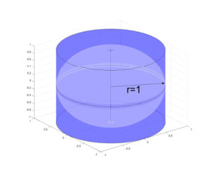
<figcaption class="paper-figure-caption"><b>Fig 1.</b> FIG. 1. A sketch of Cyl(1) in the space of Bloch vectors. For any value of r the cylinder Cyl(r) protrudes from the Bloch sphere and hence always contain pure states.</figcaption>
</figure>
<figure class="paper-figure-card">
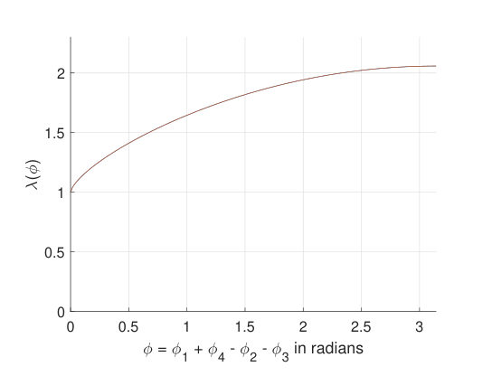
<figcaption class="paper-figure-caption"><b>Fig 2.</b> FIG. 2. The plot shows λ(φ). We do not plot φ ∈(π, 2π) as φ and 2π −φ give the same values - the graph would be symmetric about the axis φ = π. At φ = 0 no growth is needed, as the gate is trivially the identity gate, and for φ = π we recover the value derived for the CZ gate in [6]).</figcaption>
</figure>
<figure class="paper-figure-card">
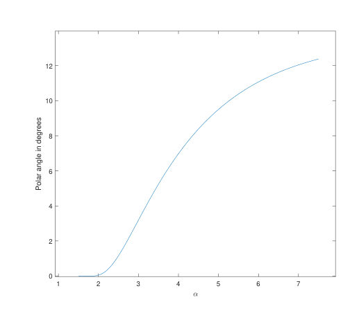
<figcaption class="paper-figure-caption"><b>Fig 3.</b> FIG. 3. The horizontal axis is α, the power law decay rate for a one dimensional system. The vertical axis is the largest an- gle θ in degrees, such that initial states cos(θ/2)|0⟩+sin θ/2|1⟩ are within the initial radius accepted by the classical simula- tion algorithm. In other words, if states with these values of θ or lower are interacted with the long range gates, the algorithm can efficiently sample the outcomes of cylindrical measurements in the limit of large numbers of particles. For this graph the gate between a qubit and its immediate neigh- bour is the CZ gate. For any finite system in practice one will be able to simulate more inputs, possibly also by exploiting asymmetric growth...</figcaption>
</figure>
<figure class="paper-figure-card">
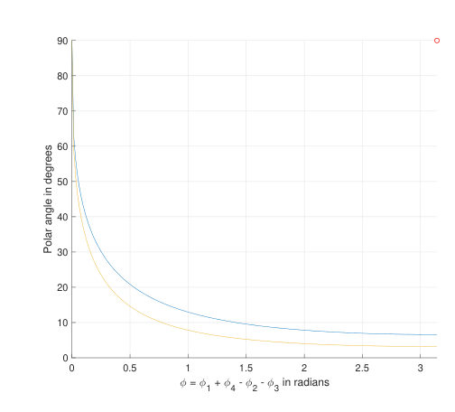
<figcaption class="paper-figure-caption"><b>Fig 4.</b> FIG. 4. The θ (vertical axis), φ (horizontal axis) phase space. A particular point (φ, θ) hence represents the pure states one gets by placing states (I+sin(θ)X+cos(θ)Z)/2 on the nodes of a graph and interacting them with arbitrary two-qubit diago- nal gates eiφ1|00⟩⟨00|+eiφ2|01⟩⟨01|+eiφ3|10⟩⟨10|+eiφ4|11⟩⟨11| such that φ = φ4 +φ1−φ2−φ3. The upper curve corresponds to graphs with degree ∆= 3 and the lower curve corresponds to graphs with degree ∆= 4. In each case for a given value of φ the system is classically efficiently simulatable for pure states with polar angles θ that are below the curve (mixed states that are convex mixtures of those pure states are also classically efficient, but can...</figcaption>
</figure>
<figure class="paper-figure-card">
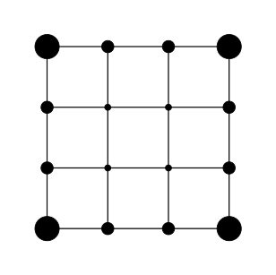
<figcaption class="paper-figure-caption"><b>Fig 5.</b> FIG. 5. An illustration of the coarse graining procedure. Imagine that this is a 4 × 4 block of cylinders within a larger square lattice. We create a separable decomposition between it and the rest of the lattice by growing the radii of the bound- ary cylinders in accordance with how many interactions they have with the rest of the system. The corner cylinders hence have larger radius than the other cylinders on the boundary.</figcaption>
</figure>
<figure class="paper-figure-card">
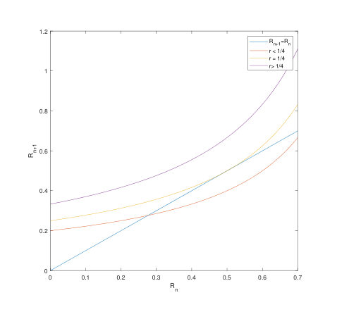
<figcaption class="paper-figure-caption"><b>Fig 6.</b> FIG. 6. A sketch of the recursion relation for different values of r.</figcaption>
</figure>
<figure class="paper-figure-card">
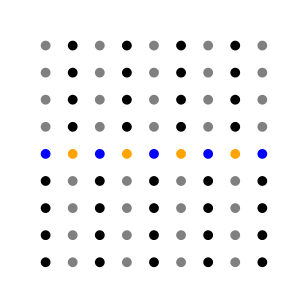
<figcaption class="paper-figure-caption"><b>Fig 7.</b> FIG. 7. Illustration for D = 2. Consider an arbitrarily large two dimensional grid. Assume that the grey cylinders have been measured in the z basis, giving the 0 outcome, removing them from the lattice. Now measure each remaining black one dimensional line coming from above or below, apart from the coloured cylinders in the middle of the grid. This creates a horizontal line of cylinders in the middle of the grid, each of which has a radius arbitrarily close to the fixed point of the one-dimensional recursions coming from above or below. In this D = 2 grid we hence require fixed points of those recursions to be less than 1/4, to satisfy the bound in Theorem 6 for the surviving central D = 1...</figcaption>
</figure>
<figure class="paper-figure-card">
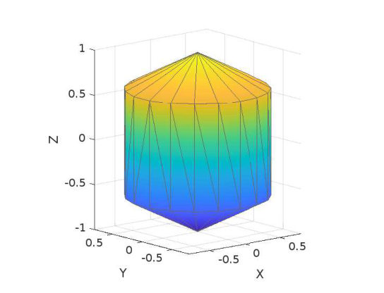
<figcaption class="paper-figure-caption"><b>Fig 8.</b> FIG. 8. A sketch of B(4/5, 3/5).</figcaption>
</figure>
</div>

<p><strong>Summary.</strong> This paper introduces 'cylindrical matter,' a beyond-quantum many-body system used to efficiently classically simulate certain quantum Ising-like systems. By using a state space that allows for non-positive semi-definite operators, the authors find a way to sample measurement outcomes of entangled quantum states using a classical model. This approach identifies new regimes of classical simulability for long-range interacting quantum systems.</p>
<p><strong>Why it may be interesting.</strong> It provides a novel theoretical framework for classical simulation using non-quantum models, which could offer new insights into the computational complexity of many-body dynamics and the limits of quantum advantage.</p>
<details><summary>Detailed structure</summary>

**Main problem.** Determining the boundaries of classical simulability for quantum many-body systems by exploring whether 'beyond-quantum' descriptions can provide efficient classical simulation of certain entangled states.

**Main result.** The authors demonstrate that a hypothetical 'cylindrical matter' model can efficiently classically simulate various quantum pure-Ising-like systems, including those with power-law decaying interactions with exponents alpha > 3D/2.

**Method.** The study uses a continuous-time dynamical model of 'cylindrical bits' and analyzes the 'radial growth' of state space required to maintain a separable decomposition under diagonal unitary interactions.

**Model / system.** A many-body system of 'cylindrical bits' where each particle's state space is a cylinder in R3, interacting via diagonal Hamiltonians (Ising-like) on a graph with power-law decaying strengths.

**Key observables.** Measurement outcomes in the Z eigenbasis or the XY plane (aX + bY), and the growth factor of the cylinder radius.

**Important parameters / regimes.** Cylindrical radius (r), interaction decay exponent (alpha), spatial dimension (D), and the phase parameter (phi) of the diagonal gates.

**Assumptions / limitations.** The model is 'non-free' due to required spatial constraints to ensure valid probabilities; measurements are assumed to be destructive or quasi-destructive; and the simulation assumes diagonal quantum circuit evolution can be computed efficiently.

**Figures summary.** Figure 1 shows the cylindrical state space protruding from the Bloch sphere; Figure 2 plots the growth factor as a function of gate phase, peaking at the CZ gate; Figure 3 presents a phase diagram of interaction decay versus allowable initial angle.

**Paper structure.** The paper introduces the cylindrical bit model, defines the mathematical framework for cylindrical separability, analyzes the growth factor of the radius under diagonal unitaries, establishes simulation conditions for power-law interactions, and compares the optimality of the cylindrical state space against alternatives.

</details>

<details><summary>Abstract</summary>

Even simplified models of quantum many-body systems can be difficult to analyse. However, taking inspiration from the foundations of physics, one may wonder whether there are practical advantages to constructing alternative beyond-quantum descriptions of many-body systems. We explore this question in the context of quantum interactions that are diagonal in the computational basis. We construct a hypothetical model of a continuous time dynamical many-body system that is based upon lattices of interacting particles called "cylindrical bits", a concept first introduced in [6]. In the language of [5] our toy model is {\it non-free}, as we need spatial constraints on how the particles interact to ensure valid probabilities. We investigate these constraints and explore the resulting `entangled' states that can exist. Certain pure {\it quantum} entangled systems can be faithfully mimicked by our cylindrical worlds. This allows us to simulate efficiently classically, in the sense of sampling measurement outcomes, a variety of previously unknown quantum systems. Examples include some states created by pure Ising interactions algebraically decaying faster than $\sim 1/r^{3D/2}$, with spatial dimension $D$, under measurements in the $Z$ eigenbasis or eigenbases of $aX+bY$ for $a,b \in \mathbb{R}$. We also explore whether another choice of non-quantum `particle' could expand the applicability of the classical simulation by defining and partially optimising a figure-of-merit that attempts to capture how useful various possibilities may be.

</details>

<p><sub><a href="#top">↑ back to top</a></sub></p>

<p><a id="paper-2604.27896"></a></p>
<h3 id="discrete-lattice-models-for-interface-growth-on-a-complete-graph"><a href="http://arxiv.org/abs/2604.27896v1">Discrete Lattice Models for Interface Growth on a Complete Graph</a></h3>
<p><strong>Authors:</strong> J. M. Marcos, J. J. Meléndez, R. Cuerno, J. J. Ruiz-Lorenzo<br>
<strong>Type:</strong> theory · <strong>Category:</strong> statistical mechanics · <strong>PDF:</strong> <a href="https://arxiv.org/pdf/2604.27896v1">https://arxiv.org/pdf/2604.27896v1</a><br>
<strong>Analysis basis:</strong> full PDF text, analyzed in chunks
<strong>Topic relevance:</strong> <code>non-equilibrium universality</code> <strong>3/5</strong> · <code>non-equilibrium dynamics</code> <strong>2/5</strong></p>
<div class="figure-strip-hint">↔ Scroll figures horizontally</div>
<div class="paper-figures-scroll">
<figure class="paper-figure-card">
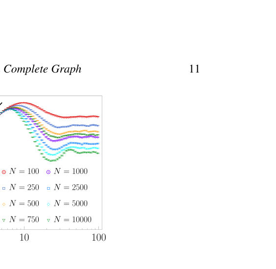
<figcaption class="paper-figure-caption"><b>Fig 1.</b> Figure 1. Log–log plot of the squared roughness, w2(t), as a function of t for the RSOS model. Data are shown for different system sizes N (see legend) and m = 10. The solid black line corresponds to the RD scaling w2(t) ∼t.</figcaption>
</figure>
<figure class="paper-figure-card">
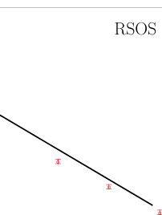
<figcaption class="paper-figure-caption"><b>Fig 2.</b> Figure 2. Log–log plot of the saturation value of the square of the roughness, w2 sat, as a function of the system size N for the RSOS model. In this plot, m = 10. The solid black line corresponds to w2 sat ∼N −1/4 scaling.</figcaption>
</figure>
<figure class="paper-figure-card">
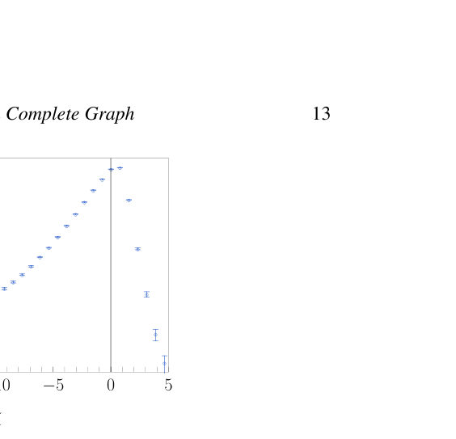
<figcaption class="paper-figure-caption"><b>Fig 3.</b> Figure 3. Histogram of the rescaled height fluctuations χ [see Eq. (11)], for the RSOS model. In this figure, N = 1000 and m = 10.</figcaption>
</figure>
<figure class="paper-figure-card">
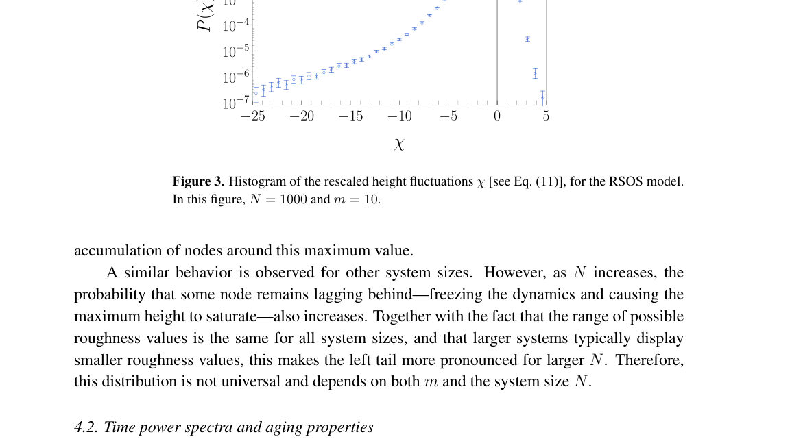
<figcaption class="paper-figure-caption"><b>Fig 4.</b> Figure 4 shows the time power spectrum, S(ω), for several system sizes of the RSOS model. The slope observed in the figure follows S(ω) ∼ω−2 quite closely, which coincides with the behavior observed for the EW and KPZ equations on a complete graph, as explained in Sec. 3.3. This result is consistent with the hyperscaling relation 2α + z = d, which is characteristic of linear equations, and contrasts with the Galilean invariance relation α+z = 2 associated with the KPZ fixed point. Figure 5 shows the spatially averaged two-time height autocorrelation function rescaled by the squared roughness, Ct(t, t0)/w2(t0), as a function of the time difference t −t0, for a fixed system size of the RSOS...</figcaption>
</figure>
<figure class="paper-figure-card">
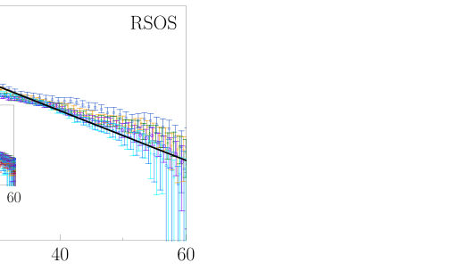
<figcaption class="paper-figure-caption"><b>Fig 5.</b> Figure 5. Spatially averaged two-time height autocorrelation function, rescaled by the squared roughness, Ct(t, t0)/w2(t0), as a function of the time difference t −t0 for the RSOS model, shown for different waiting times t0 = {1, 2, 3, 4, 5, 6, 7}, which appear bottom to top in the inset. The system size is N = 1000 and m = 10. The solid black line corresponds to the theoretical prediction given by Eq. (17) with τRSOS = m = 10. Inset: Same data shown without rescaling by the squared roughness w2(t0).</figcaption>
</figure>
<figure class="paper-figure-card">
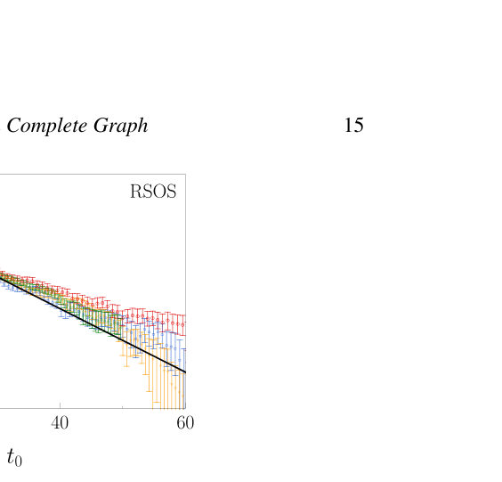
<figcaption class="paper-figure-caption"><b>Fig 6.</b> Figure 6. Spatially averaged two-time height autocorrelation function, rescaled by the squared roughness, Ct(t, t0)/w2(t0), as a function of the time difference t −t0 for the RSOS model, shown for different waiting times t0 = {20, 30, 40, 50}. The system size is N = 1000 and m = 10. The solid black line corresponds to the theoretical prediction given by Eq. (17) with τRSOS = m = 10.</figcaption>
</figure>
<figure class="paper-figure-card">
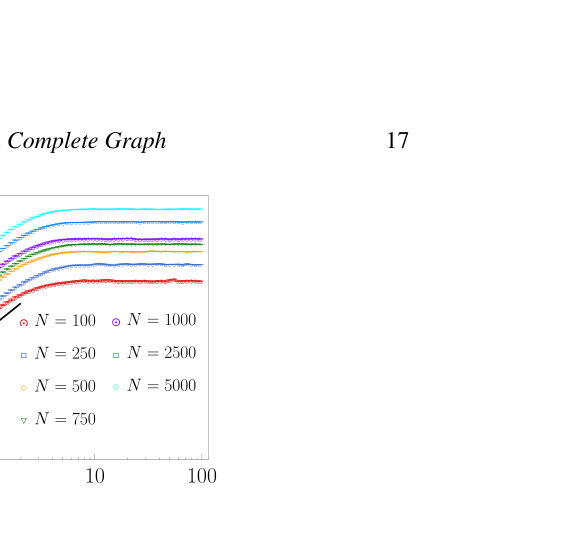
<figcaption class="paper-figure-caption"><b>Fig 7.</b> Figure 7. Log–log plot of the square of the roughness, w2(t), as a function of t for the BD model. Data are shown for different system sizes N (see legend). The solid black line corresponds to w2(t) ∼t2 scaling, while the dashed black line corresponds to w2(t) ∼t behavior.</figcaption>
</figure>
<figure class="paper-figure-card">
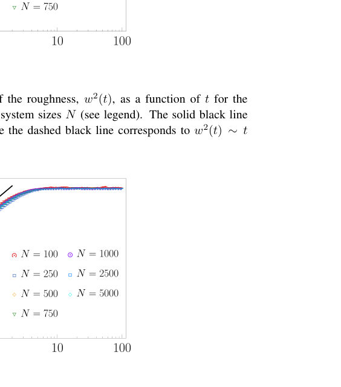
<figcaption class="paper-figure-caption"><b>Fig 8.</b> Figure 8. Log–log plot of the square of the roughness rescaled by the system size, w2(t)/N, as a function of t for the BD model. Data are shown for different system sizes N (see legend). The solid black line corresponds to w2(t) ∼t2 scaling, while the dashed black line corresponds to w2(t) ∼t behavior.</figcaption>
</figure>
<figure class="paper-figure-card">
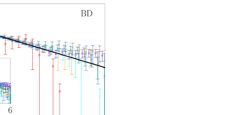
<figcaption class="paper-figure-caption"><b>Fig 9.</b> Figure 11. Spatially averaged two-time height autocorrelation function, rescaled by the squared roughness, Ct(t, t0)/w2(t0), as a function of the time difference t −t0 for the BD model, shown for different waiting times t0 = {0.5, 1, 1.5, 2, 3, 5, 10}, which appear bottom to top in the inset. The system size is N = 1000. The solid black line corresponds to the theoretical prediction given by Eq. (18). Inset: Same data shown without rescaling by the squared roughness w2(t0).</figcaption>
</figure>
</div>

<p><strong>Summary.</strong> This paper examines how the topology of a complete graph affects the universality classes of interface growth models. It finds that while some models retain continuum-like features, others like Ballistic Deposition deviate significantly, exhibiting new growth regimes due to the infinite-dimensional connectivity.</p>
<p><strong>Why it may be interesting.</strong> not directly relevant</p>
<details><summary>Detailed structure</summary>

**Main problem.** The study investigates whether discrete lattice growth models (RSOS and BD) faithfully reproduce the behavior of their corresponding continuum equations (EW and KPZ) when defined on a complete graph, representing the infinite-dimensional limit.

**Main result.** While the RSOS model shows similarities to continuum equations, the BD model exhibits an 'ultrafast' growth regime and saturation roughness that increases with system size, placing it outside the KPZ universality class on a complete graph.

**Method.** Numerical Monte Carlo-style simulations and analytical derivations using probabilistic modeling and scaling analysis.

**Model / system.** Discrete interface growth models, specifically the Restricted Solid-on-Solid (RSOS) and Ballistic Deposition (BD) models, implemented on a complete graph (all-to-all connectivity).

**Key observables.** Global interfacial roughness (w), height fluctuations, power spectra (S(omega)), and two-time height autocorrelation functions.

**Important parameters / regimes.** System size (N), height constraint (m), and growth regimes (Random Deposition, ultrafast growth, and saturation).

**Assumptions / limitations.** The complete graph is assumed to be a valid proxy for the infinite-dimensional limit of statistical mechanical systems.

**Figures summary.** Plots showing squared roughness evolution over time, scaling of saturation roughness with system size, histograms of rescaled height fluctuations showing left tails, and the frequency-dependent power spectrum.

**Paper structure.** The paper introduces the problem of growth on complete graphs, analyzes specific models (RSOS, BD, etc.), compares discrete results to continuum benchmarks, and concludes with discussions on universality and dimensionality.

</details>

<details><summary>Abstract</summary>

We investigate the behavior of discrete interface growth models belonging to the Edwards--Wilkinson (EW) and Kardar--Parisi--Zhang (KPZ) universality classes, when defined on a complete graph, a topology commonly used to probe the infinite-dimensional limit of statistical mechanical systems. Our aim is to assess to what extent discrete lattice models reproduce the behavior of their corresponding continuum equations in this highly connected setting. After assessing the trivial behavior shown by some well known cases (like random deposition with surface relaxation or the etching model), we focus on two paradigmatic models associated with the KPZ universality class, the Restricted Solid-on-Solid (RSOS) and Ballistic Deposition (BD) models, and assess non-trivial behavior through several observables including the roughness, height fluctuations, power spectra, and two-time autocorrelation functions. Still, despite similarities with continuum equations, important differences arise in the fluctuations and long-time dynamics. In both discrete models the rescaled height fluctuations display a pronounced left tail, indicating the presence of lagging nodes. While the RSOS model exhibits a saturation roughness that decreases with system size, similarly to the EW and KPZ equations, the BD model exhibits a saturation roughness that increases with system size and an additional ultrafast growth regime, placing it outside the KPZ universality class on a complete graph.

</details>

<p><sub><a href="#top">↑ back to top</a></sub></p>

<p><a id="paper-2604.27829"></a></p>
<h3 id="entanglement-of-multi-qubit-quantum-graph-states-and-studies-structural-properties-of-tripartite-graphs-with-quantum-programming"><a href="http://arxiv.org/abs/2604.27829v1">Entanglement of multi-qubit quantum graph states and studies structural properties of tripartite graphs with quantum programming</a></h3>
<p><strong>Authors:</strong> Kh. P. Gnatenko<br>
<strong>Type:</strong> both · <strong>Category:</strong> quantum information and computing · <strong>PDF:</strong> <a href="https://arxiv.org/pdf/2604.27829v1">https://arxiv.org/pdf/2604.27829v1</a><br>
<strong>Analysis basis:</strong> full PDF text, analyzed in chunks
<strong>Topic relevance:</strong> <code>entanglement &amp; information structure</code> <strong>3/5</strong> · <code>QC/QI experiment</code> <strong>2/5</strong></p>
<div class="figure-strip-hint">↔ Scroll figures horizontally</div>
<div class="paper-figures-scroll">
<figure class="paper-figure-card">
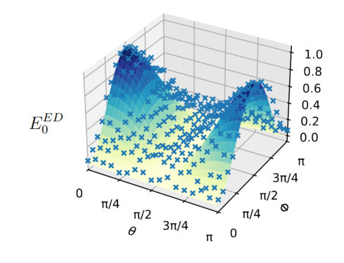
<figcaption class="paper-figure-caption"><b>Fig 1.</b> Figure 2: Entanglement distance of qubit q[0] with other qubits in state (51) for α = 0 and different values of θ, ϕ. The results obtained using the AerSimulator which includes a readout error of the order 10−2, a Pauli-X error of 10−4, and a CNOT error of 10−2 are indicated by cross markers, while the continuous surface represents the corresponding analytical calculations.</figcaption>
</figure>
<figure class="paper-figure-card">
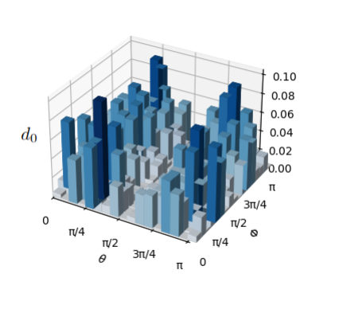
<figcaption class="paper-figure-caption"><b>Fig 2.</b> Figure 3: Absolute differences d0 between the analytical results for the entanglement distance of qubit q[0] with other qubits in state (51) for α = 0 and different values of θ, ϕ. and results obtained using the AerSimulator which includes a readout error of the order 10−2, a Pauli-X error of 10−4, and a CNOT error of 10−2.</figcaption>
</figure>
<figure class="paper-figure-card">
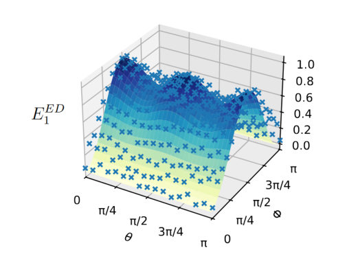
<figcaption class="paper-figure-caption"><b>Fig 3.</b> Figure 4: Entanglement distance of qubit q[1] with other qubits in state (51) for α = 0 and different values of θ, ϕ. The results obtained using the AerSimulator which includes a readout error of the order 10−2, a Pauli-X error of 10−4, and a CNOT error of 10−2 are indicated by cross markers, while the continuous surface represents the corresponding analytical calculations.</figcaption>
</figure>
<figure class="paper-figure-card">

<figcaption class="paper-figure-caption"><b>Fig 4.</b> Figure 5: Absolute differences d1 between the analytical results for the entanglement distance of qubit q[1] with other qubits in state (51) for α = 0 and different values of θ, ϕ. and results obtained using the AerSimulator which includes a readout error of the order 10−2, a Pauli-X error of 10−4, and a CNOT error of 10−2.</figcaption>
</figure>
<figure class="paper-figure-card">

<figcaption class="paper-figure-caption"><b>Fig 5.</b> Figure 6: Entanglement distance of qubit q[2] with other qubits in state (51) for α = 0 and different values of θ, ϕ. The results obtained using the AerSimulator which includes a readout error of the order 10−2, a Pauli-X error of 10−4, and a CNOT error of 10−2 are indicated by cross markers, while the continuous surface represents the corresponding analytical calculations.</figcaption>
</figure>
<figure class="paper-figure-card">

<figcaption class="paper-figure-caption"><b>Fig 6.</b> Figure 7: Absolute differences d2 between the analytical results for the entanglement distance of qubit q[2] with other qubits in state (51) for α = 0 and different values of θ, ϕ. and results obtained using the AerSimulator which includes a readout error of the order 10−2, a Pauli-X error of 10−4, and a CNOT error of 10−2.</figcaption>
</figure>
</div>

<p><strong>Summary.</strong> This paper proposes a framework where multi-qubit entangled states are used to represent and study the structural properties of tripartite graphs. By linking quantum observables like entanglement distance to graph metrics like 4-cycles, it demonstrates that quantum programming can be an effective tool for investigating complex classical graph topologies.</p>
<p><strong>Why it may be interesting.</strong> not directly relevant</p>
<details><summary>Detailed structure</summary>

**Main problem.** The paper aims to develop a method for constructing multi-qubit entangled states that represent weighted tripartite graphs and to establish a quantitative link between quantum properties (entanglement and correlators) and graph structural properties.

**Main result.** The study establishes that quantum correlators and entanglement distance are explicitly determined by graph features like vertex degrees, common neighbors, and 4-cycles, and validates these analytical predictions using noisy quantum simulations.

**Method.** The authors use analytical derivations for spin expectation values and entanglement distance, complemented by quantum simulations on the IBM AerSimulator with realistic noise models (readout, Pauli-X, and CNOT errors).

**Model / system.** The system consists of multi-qubit quantum graph states constructed from weighted and directed tripartite graphs G(U, V, W, E) using specific two-qubit rotation gates (R_XY, R_XZ, R_YZ) applied to an initial separable state.

**Key observables.** Entanglement distance (E_ED), quantum correlators (Pauli expectation values such as <sigma_x sigma_x>, <sigma_y sigma_y>, and <sigma_z sigma_z>), and mean spin values.

**Important parameters / regimes.** Edge weights (phi_kl), initial state parameters (theta_k, alpha_k), vertex degrees, and graph topological features like 4-cycles and common neighbors.

**Assumptions / limitations.** The derivation assumes a tripartite structure where no edges exist within the same vertex set, and that the rotation gates commute due to this structure; simplified formulas assume unweighted graphs and uniform parameters.

**Figures summary.** Figure 1 shows a quantum circuit for a triangle-based state; Figures 2, 4, and 6 compare analytical entanglement distance surfaces with noisy simulation data; Figures 3, 5, and 7 plot the absolute error between analytical and simulated results.

**Paper structure.** The paper introduces the construction method for tripartite quantum graph states, provides analytical derivations for entanglement and correlators, establishes the mapping between quantum and graph structural properties, and concludes with a numerical validation using noisy quantum simulations.

</details>

<details><summary>Abstract</summary>

We propose a method for constructing multi-qubit entangled quantum states representing weighted tripartite graphs. An expression for the entanglement distance for multi-qubit states corresponding to arbitrary tripartite graph structures is obtained. The entanglement of a qubit with the rest of the system in a quantum graph state is determined by the weights of the edges in the closed neighborhood of the corresponding vertex and by its degree with respect to other sets. We also calculate quantum correlators in the general case of tripartite quantum graph states. We establish a relationship between these quantum properties and the structural properties of the corresponding tripartite graphs, including the number of non-overlapping neighbors, the number of common neighbors of the corresponding vertices, and the number of 4-cycles. As an illustrative example, we consider a tripartite graph forming a triangle and compute the entanglement distance using quantum simulations on the AerSimulator with noise models. The numerical results are consistent with the theoretical predictions. The obtained results demonstrate that quantum graph states provide an effective framework for studying structural properties of tripartite graphs. They open up the possibility of investigating such properties using quantum programming. It is worth highlighting that tripartite graphs have applications in solving practical problems such as resource allocation, scheduling, and database and hypergraph modeling.

</details>

<p><sub><a href="#top">↑ back to top</a></sub></p>

<p><a id="paper-2604.28127"></a></p>
<h3 id="nodal-algebraic-curves-and-entropy-diagnostics-in-degenerate-two-dimensional-harmonic-oscillator-shells"><a href="http://arxiv.org/abs/2604.28127v1">Nodal algebraic curves and entropy diagnostics in degenerate two-dimensional harmonic-oscillator shells</a></h3>
<p><strong>Authors:</strong> C A Escobar Ruiz, H Olivares-Pilon, A M Escobar-Ruiz<br>
<strong>Type:</strong> theory · <strong>Category:</strong> other · <strong>PDF:</strong> <a href="https://arxiv.org/pdf/2604.28127v1">https://arxiv.org/pdf/2604.28127v1</a><br>
<strong>Analysis basis:</strong> full PDF text, analyzed in chunks
<strong>Topic relevance:</strong> <code>entanglement &amp; information structure</code> <strong>3/5</strong> · <code>interference shaping light</code> <strong>2/5</strong></p>
<div class="figure-strip-hint">↔ Scroll figures horizontally</div>
<div class="paper-figures-scroll">
<figure class="paper-figure-card">

<figcaption class="paper-figure-caption"><b>Fig 1.</b> FIG. 1. Mutual information I(x; y) versus the mixing param- eter t in the N = 1 shell (a = √</figcaption>
</figure>
<figure class="paper-figure-card">

<figcaption class="paper-figure-caption"><b>Fig 2.</b> FIG. 2. Nodal geometry in the N = 2 shell at α = 1 along a = c = p</figcaption>
</figure>
<figure class="paper-figure-card">

<figcaption class="paper-figure-caption"><b>Fig 3.</b> FIG. 3. Shifted entropic uncertainty sum ∆(Sr + Sp) =  Sr(t) + Sp(t)  −  Sr(0) + Sp(0)  along the symmetric path in the N = 2 shell. The curve remains smooth near the rank-degenerate conic transition t = 1/ √</figcaption>
</figure>
<figure class="paper-figure-card">

<figcaption class="paper-figure-caption"><b>Fig 4.</b> FIG. 4. Nodal-domain entropy Sdom at α = 1 as a function of the mixing parameter t.</figcaption>
</figure>
<figure class="paper-figure-card">

<figcaption class="paper-figure-caption"><b>Fig 5.</b> FIG. 5. Mutual information I(x; y) versus t at α = 1 along the symmetric path a = c = p</figcaption>
</figure>
<figure class="paper-figure-card">

<figcaption class="paper-figure-caption"><b>Fig 6.</b> FIG. 8. Mutual information I(x; y) versus t at α = 1 along the three-state path (95) in the N = 3 shell. The curve rises as the cubic nodal geometry becomes more strongly correlated, reaches a maximum near the projective close-branch regime, and decreases to zero at t = 1, where the state reduces to the separable basis state Φ21.</figcaption>
</figure>
<figure class="paper-figure-card">

<figcaption class="paper-figure-caption"><b>Fig 7.</b> FIG. 6. Representative nodal geometries in the N = 3 shell at α = 1 along the path (95). Top left: t = 0.10, illustrating the cubic-loop regime. Top right: t = 0.70, near the close- branch regime where smooth nodal branches approach each other without forming an exact finite-affine singularity. Bot- tom left: t = 0.85, beyond the close-branch regime, showing a different nodal arrangement. Bottom right: t = 1, corre- sponding to the pure Φ21 state with nodal set y(2αx2−1) = 0, i.e. the line y = 0 together with the two vertical lines x = ±(2α)−1/2, which partition the plane into six nodal do- mains.</figcaption>
</figure>
<figure class="paper-figure-card">

<figcaption class="paper-figure-caption"><b>Fig 8.</b> FIG. 7. Nodal-domain entropy Sdom at α = 1 as a function of the mixing parameter t.</figcaption>
</figure>
</div>

<p><strong>Summary.</strong> This paper demonstrates that the topological changes in the nodal patterns of 2D harmonic oscillator states are governed by algebraic singularities. It shows that while global entropies remain smooth, nodal-domain entropy can sharply detect these topology-changing events. This framework is relevant for characterizing structured light and trapped particle systems.</p>
<p><strong>Why it may be interesting.</strong> It provides a rigorous mathematical framework for understanding the fine-scale structure of wavefunctions in degenerate systems, which is directly applicable to the control of structured light and the manipulation of motional states in trapped ion/atom experiments.</p>
<details><summary>Detailed structure</summary>

**Main problem.** Investigating how the topological restructuring of nodal geometry (the zero-set of wavefunctions) within degenerate quantum eigenspaces is organized and how it can be quantified using entropy diagnostics.

**Main result.** The study finds that nodal geometry is organized by algebraic stratification (singularities and degeneracies) rather than spectral ordering, and that nodal-domain entropy is a sensitive diagnostic for topology changes that global entropies like Shannon entropy fail to detect.

**Method.** The authors use the theory of real algebraic curves to identify topological transitions via finite singularities and projective degeneracies, combined with information-theoretic diagnostics like nodal-domain entropy and mutual information.

**Model / system.** A two-dimensional isotropic quantum harmonic oscillator with a fixed energy shell N, where wavefunctions are real-phase Hermite-Gaussian superpositions.

**Key observables.** Nodal-domain entropy (S_dom), Cartesian mutual information (I(x;y)), configuration-space Shannon entropy (S_r), momentum-space Shannon entropy (S_p), and the entropic uncertainty sum (S_r + S_p).

**Important parameters / regimes.** Principal quantum number N, mixing parameter t, and the oscillator scaling parameter alpha.

**Assumptions / limitations.** The analysis is restricted to real-phase wavefunctions (no phase singularities/vortices) and focuses on fixed energy shells.

**Figures summary.** Figure 1 shows mutual information vs. mixing parameter for N=1; Figure 2 illustrates nodal geometry evolution for N=2; Figure 6 shows nodal plots for N=3 at various mixing stages; Figure 7 shows nodal-domain entropy curves.

**Paper structure.** The paper introduces the problem of nodal restructuring, establishes a mathematical framework using algebraic geometry, provides a theorem for regularity, analyzes specific low-N shells (N=1, 2, 3, 4) to demonstrate topological transitions, and concludes with experimental implications for optics and trapped ions.

</details>

<details><summary>Abstract</summary>

Degenerate quantum eigenspaces can support substantial changes in nodal geometry at fixed energy. We show that, for the two-dimensional isotropic harmonic oscillator, this restructuring is organized by the Hermite-constrained algebraic curve $P_N(x,y)=0$ appearing in every real shell state, $ψ_N=e^{-αr^2/2}P_N(x,y)$. Finite singularities, $P_N=\nabla P_N=0$, and projective degeneracies of the leading homogeneous part identify the strata where topology-changing events can occur. We combine these criteria with entropy diagnostics: the nodal-domain entropy $S_{\mathrm{dom}}$, Cartesian mutual information $I(x;y)$, and the entropic uncertainty sum $S_r+S_p$. The first three shells reveal a hierarchy: $N=1$ only rotates a nodal line; $N=2$ has a conic transition at $b^2=2ac$, sharply detected by $S_{\mathrm{dom}}$ but not by global entropies; and $N=3$ supports cubic close-branch regimes organized by the projective discriminant, with enhanced responses in $S_{\mathrm{dom}}$ and $I(x;y)$. Thus algebraic stratification, rather than spectral ordering, organizes nodal geometry inside a degenerate eigenspace, while entropy diagnostics quantify probability redistribution and correlation. The framework suggests experimentally reconstructible signatures for real-phase Hermite--Gaussian structured light and approximately isotropic trapped motional systems.

</details>

<p><sub><a href="#top">↑ back to top</a></sub></p>

<p><a id="paper-2604.27130"></a></p>
<h3 id="optimised-inference-of-quantum-phenomena-in-high-energy-collider-experiments"><a href="http://arxiv.org/abs/2604.27130v1">Optimised Inference of Quantum Phenomena in High-Energy Collider Experiments</a></h3>
<p><strong>Authors:</strong> Hai-Chau Nguyen, Gilberto Tetlalmatzi-Xolocotzi, Carmen Diez Pardos, Otfried Gühne, Matthias Kleinmann<br>
<strong>Type:</strong> theory · <strong>Category:</strong> quantum information and computing · <strong>PDF:</strong> <a href="https://arxiv.org/pdf/2604.27130v1">https://arxiv.org/pdf/2604.27130v1</a><br>
<strong>Analysis basis:</strong> abstract only; PDF text extraction failed or PDF unavailable
<strong>Topic relevance:</strong> <code>entanglement &amp; information structure</code> <strong>3/5</strong> · <code>quantum measurements</code> <strong>2/5</strong></p>
<p><strong>Summary.</strong> This paper introduces a new method for detecting quantum entanglement in particle collider experiments using shadow tomography. By addressing the challenges of spin-momentum coupling in relativistic regimes, the framework allows for more efficient characterization of spin correlations. The method is demonstrated on top quark production at the LHC.</p>
<p><strong>Why it may be interesting.</strong> It demonstrates the application of quantum information protocols (shadow tomography) to extract entanglement signatures from complex, high-energy relativistic systems.</p>
<details><summary>Detailed structure</summary>

**Main problem.** Characterizing spin-spin entanglement in high-energy collider experiments is difficult because relativistic motion couples spin and momentum, and particle momenta are not experimentally controlled.

**Main result.** The development of a general framework using shadow tomography to efficiently infer spin-spin correlations and entanglement in collider environments.

**Method.** The authors utilize shadow tomography techniques to reconstruct quantum properties from experimental data.

**Model / system.** The framework is applied to top quark pair production at the Large Hadron Collider (LHC) as a proof of concept, though it is designed for general high-energy particle systems.

**Key observables.** spin-spin correlations and spin-spin entanglement

**Assumptions / limitations.** The framework assumes the applicability of shadow tomography to relativistic regimes where spin and momentum are coupled.

**Paper structure.** The paper introduces the challenge of entanglement in high-energy physics, presents a new framework based on shadow tomography, and demonstrates its utility using top quark pair production at the LHC.

</details>

<details><summary>Abstract</summary>

Entanglement, a fundamental phenomenon of quantum theory, has recently been observed in processes in high-energy physics. This opens new avenues for probing quantum effects in relativistic regimes, but also poses conceptual and technical challenges. We develop a general framework based on shadow tomography techniques for characterising spin-spin correlations in collider experiments. This improves the analysis of spin-spin entanglement, where relativistic motion couples spin and momentum and the momenta of the investigated particles are not under experimental control. As a proof of concept we illustrate the application of our formalism to top quark pair production at the Large Hadron Collider at CERN. The framework, however, is general and flexible and can be readily applied to more complex final states and systems with more particles.

</details>

<p><sub><a href="#top">↑ back to top</a></sub></p>

<p><a id="paper-2604.27135"></a></p>
<h3 id="parametrized-variational-quantum-tomography"><a href="http://arxiv.org/abs/2604.27135v1">Parametrized Variational Quantum Tomography</a></h3>
<p><strong>Authors:</strong> V. A. Penas, M. Losada, D. Tielas, F. Holik<br>
<strong>Type:</strong> theory · <strong>Category:</strong> quantum information and computing · <strong>PDF:</strong> <a href="https://arxiv.org/pdf/2604.27135v1">https://arxiv.org/pdf/2604.27135v1</a><br>
<strong>Analysis basis:</strong> full PDF text, analyzed in chunks
<strong>Topic relevance:</strong> <code>quantum measurements</code> <strong>3/5</strong> · <code>entanglement &amp; information structure</code> <strong>2/5</strong></p>
<div class="figure-strip-hint">↔ Scroll figures horizontally</div>
<div class="paper-figures-scroll">
<figure class="paper-figure-card">

<figcaption class="paper-figure-caption"><b>Fig 1.</b> FIG. 1: Average trace distance between target and reconstructed states for 500 random three-qubit pure states as a function of the number of measured observables, for MaxEnt and VQT∞. The cutoff is set to 32 observables while quorum is 64.</figcaption>
</figure>
<figure class="paper-figure-card">

<figcaption class="paper-figure-caption"><b>Fig 2.</b> FIG. 2: Average fidelity between target and reconstructed states for 500 random three-qubit pure states as a function of the number of measured observables, for MaxEnt and VQT∞. The cutoff is set to 32 as in Fig. 1.</figcaption>
</figure>
<figure class="paper-figure-card">

<figcaption class="paper-figure-caption"><b>Fig 3.</b> FIG. 3: (a) Histograms of fidelities between VQT∞and MaxEnt reconstructed states, over 500 random three-qubit pure states. (b) Average fidelity between VQT∞and MaxEnt reconstructed states. Error bars represent quartiles. Note that mean (average) and median are close to each other but they are not equal.</figcaption>
</figure>
<figure class="paper-figure-card">

<figcaption class="paper-figure-caption"><b>Fig 4.</b> FIG. 4: Average fidelity between target and reconstructed states for 500 random three-qubit pure states as a function of the number of measured observables, for MaxEnt, VQT∞, and PVQT with β = 0.01 and β = 0.003.</figcaption>
</figure>
<figure class="paper-figure-card">

<figcaption class="paper-figure-caption"><b>Fig 5.</b> FIG. 5: (a) Histograms of fidelities between PVQT with β = 0.01 and MaxEnt reconstructed states, over 500 random three-qubit pure states. (b) Average fidelity between PVQT with β = 0.01 and MaxEnt reconstructed states. Error bars represent quartiles. Note that mean (average) and median are close to each other but they are not equal.</figcaption>
</figure>
<figure class="paper-figure-card">

<figcaption class="paper-figure-caption"><b>Fig 6.</b> FIG. 6: Average fidelity between different VQTs and MaxEnt reconstructed states for 500 random three-qubit pure states as a function of the number of measured observables.</figcaption>
</figure>
<figure class="paper-figure-card">

<figcaption class="paper-figure-caption"><b>Fig 7.</b> FIG. 7: Average Kullback-Leibler divergence between the uniform distribution and the unmeasured probability vector ⃗u of different VQTs and MaxEnt reconstructed states, for 500 random three-qubit pure states, as a function of the number of measured observables.</figcaption>
</figure>
<figure class="paper-figure-card">

<figcaption class="paper-figure-caption"><b>Fig 8.</b> FIG. 9: Average fidelity between different VQTs and MaxEnt reconstructed states for 500 random three-qubit pure states as a function of the number of measured ob- servables, with 5% uniform noise added to the measure- ment outcomes.</figcaption>
</figure>
<figure class="paper-figure-card">

<figcaption class="paper-figure-caption"><b>Fig 9.</b> FIG. 8: Average Von Neumann entropy for different VQTs and MaxEnt reconstructed states for 500 random three-qubit pure states as a function of the number of measured observables.</figcaption>
</figure>
<figure class="paper-figure-card">

<figcaption class="paper-figure-caption"><b>Fig 10.</b> FIG. 10: Average fidelity between different VQTs and MaxEnt reconstructed states for 500 random three-qubit rank-2 states as a function of the number of measured observables, with 5% uniform noise added to the mea- surement outcomes. Cutoff around 45 observables.</figcaption>
</figure>
</div>

<p><strong>Summary.</strong> The paper introduces Parametrized Variational Quantum Tomography (PVQT), a method that uses a tunable cost function to bridge the gap between efficient but biased VQT and computationally expensive Maximum Entropy methods. By interpolating between 1-norm and infinity-norm penalties, the authors demonstrate that one can achieve higher-fidelity state reconstruction in underdetermined measurement scenarios.</p>
<p><strong>Why it may be interesting.</strong> This is highly relevant for quantum information researchers as it provides a more efficient, scalable alternative to Maximum Entropy tomography, offering a way to control the bias in state reconstruction for noisy, incomplete experimental data.</p>
<details><summary>Detailed structure</summary>

**Main problem.** Addressing the ambiguity and intrinsic bias in quantum state reconstruction when measurement data are incomplete (underdetermined).

**Main result.** The proposed Parametrized Variational Quantum Tomography (PVQT) achieves higher fidelity to the Maximum Entropy solution and higher von Neumann entropy than standard VQT or VQT_infinity by tuning hyperparameters.

**Method.** A new cost function that interpolates between the 1-norm and the infinity norm of unmeasured probabilities, formulated as a linear semidefinite program (SDP).

**Model / system.** The study focuses on n-qubit quantum systems (tested up to 5 qubits) using subsets of a Symmetric Informationally Complete POVM (SIC-POVM).

**Key observables.** Fidelity, trace distance, von Neumann entropy, and Kullback-Leibler (KL) divergence of unmeasured probabilities.

**Important parameters / regimes.** Hyperparameters alpha and beta that control the interpolation between VQT and VQT_infinity; number of measured observables K.

**Assumptions / limitations.** The method assumes the reconstruction problem is underdetermined due to incomplete POVM measurements; testing is performed on Haar-random pure and mixed states.

**Figures summary.** Figures show trace distance and fidelity comparisons between MaxEnt, VQT, and VQT_infinity; histograms of fidelity distributions; and performance scaling for 3, 4, and 5-qubit systems under noise.

**Paper structure.** The paper introduces the problem of incomplete tomography, defines the mathematical framework for VQT and VQT_infinity, proposes the PVQT interpolation method, presents numerical results comparing fidelity and entropy across different qubit counts, and discusses limitations regarding hyperparameter selection.

</details>

<details><summary>Abstract</summary>

Quantum state tomography provides a fundamental framework for reconstructing quantum states. When the measurement data are not informationally complete, the observed statistics admit multiple compatible density matrices, making the reconstruction problem inherently underdetermined and calling for the selection of a meaningful estimator. Two well-established approaches to address this ambiguity are Maximum Entropy (MaxEnt) and Variational Quantum Tomography (VQT). A variant of VQT, named VQT$_\infty$, has been introduced to reproduce MaxEnt-like solutions. In this work, we generalize this approach by introducing a parametrized cost function that interpolates between the 1-norm and the infinity norm, thereby unifying VQT and VQT$_\infty$ within a single framework. By tuning the associated hyperparameters, the proposed method enables controlled exploration of the set of compatible density matrices. We show that this interplay yields reconstructed states with higher fidelity to the MaxEnt solution than those obtained via VQT$_\infty$ while preserving computational tractability.

</details>

<p><sub><a href="#top">↑ back to top</a></sub></p>

<p><a id="paper-2604.27216"></a></p>
<h3 id="tuning-of-quantum-nanoscaled-friction-within-the-prandtl-tomlinson-model"><a href="http://arxiv.org/abs/2604.27216v1">Tuning of quantum nanoscaled friction within the Prandtl-Tomlinson model</a></h3>
<p><strong>Authors:</strong> Dai-Nam Le, Lilia M. Woods<br>
<strong>Type:</strong> theory · <strong>Category:</strong> other · <strong>PDF:</strong> <a href="https://arxiv.org/pdf/2604.27216v1">https://arxiv.org/pdf/2604.27216v1</a><br>
<strong>Analysis basis:</strong> abstract only; PDF text extraction failed or PDF unavailable
<strong>Topic relevance:</strong> <code>Frenkel-Kontorova</code> <strong>3/5</strong> · <code>non-equilibrium dynamics</code> <strong>1/5</strong></p>
<p><strong>Summary.</strong> This paper explores how to control nanoscale friction by adjusting system parameters like corrugation and length ratios. It identifies new motion regimes and highlights how quantum effects like Landau-Zener tunneling influence frictional dynamics. These insights are crucial for controlling friction in future nanotechnological applications.</p>
<p><strong>Why it may be interesting.</strong> not directly relevant</p>
<details><summary>Detailed structure</summary>

**Main problem.** Investigating the mechanisms for controlling frictional force at both quantum and classical levels in nanoscale systems.

**Main result.** The study identifies that frictional dynamics can be tuned via corrugation and characteristic length ratio parameters, and uncovers motion types beyond the standard stick-slip regime, including the role of Landau-Zener tunneling.

**Method.** Theoretical investigation using the Prandtl-Tomlinson framework to analyze dynamical force behavior.

**Model / system.** A nanoparticle-chain system modeled within the Prandtl-Tomlinson framework to study nanoscale friction.

**Key observables.** Frictional force, dynamical force behavior, and types of motion (e.g., stick-slip).

**Important parameters / regimes.** Corrugation, characteristic length ratio, and Landau-Zener tunneling probability.

**Paper structure.** The paper utilizes the Prandtl-Tomlinson framework to systematically investigate control means of friction, explores different motion regimes, and analyzes the impact of quantum tunneling.

</details>

<details><summary>Abstract</summary>

Nanoscaled friction is a fundamental tribological phenomenon with complex behavior of its dynamical force. Here, we utilize the Prandtl-Tomlinson framework to investigate systematically the different means of control of the frictional force at the quantum and classical levels. It is found that the frictional dynamics can be controlled by the corrugation and characteristic length ratio parameters dependent upon properties of the nanoparticle-chain system. In addition to the stick-slip regime, other types of motion are uncovered, highlighting the richness of the frictional dynamics. The importance of Landau-Zener tunneling for the quantum motion is also analyzed. These findings provide valuable insights for interpreting experimental observations and controlling quantum frictional behavior in nanoscale systems.

</details>

<p><sub><a href="#top">↑ back to top</a></sub></p>

<p><a id="paper-2604.27440"></a></p>
<h3 id="evidence-for-interior-gap-pair-density-wave-state-in-kondo-heisenberg-chains"><a href="http://arxiv.org/abs/2604.27440v1">Evidence for interior-gap pair-density-wave state in Kondo-Heisenberg chains</a></h3>
<p><strong>Authors:</strong> Yuto Hirose, Shunsuke C. Furuya, Yasuhiro Tada<br>
<strong>Type:</strong> theory · <strong>Category:</strong> strongly correlated electrons · <strong>PDF:</strong> <a href="https://arxiv.org/pdf/2604.27440v1">https://arxiv.org/pdf/2604.27440v1</a><br>
<strong>Analysis basis:</strong> abstract only; PDF text extraction failed or PDF unavailable
<strong>Topic relevance:</strong> <code>Kondo &amp; dissipative impurity</code> <strong>3/5</strong></p>
<p><strong>Summary.</strong> This paper demonstrates that an interior-gap pair-density-wave state can emerge dynamically in 1D Kondo-Heisenberg chains due to strong correlations, rather than requiring pre-existing Fermi-surface mismatch. By comparing S=1/2 and S=3/2 chains using DMRG, the authors show how the momentum distribution function develops characteristic features of interior-gap physics. This provides a new mechanism for realizing exotic superconducting states in strongly correlated systems.</p>
<p><strong>Why it may be interesting.</strong> not directly relevant</p>
<details><summary>Detailed structure</summary>

**Main problem.** The realization of interior-gap superconductivity in canonical strongly correlated models has been elusive, as it is traditionally associated with pre-existing Fermi-surface mismatch.

**Main result.** The authors find that the superconducting phase of 1D Kondo-Heisenberg models realizes an interior-gap pair-density-wave (PDW) state where the low-energy single-particle structure emerges dynamically from strong correlations.

**Method.** The study utilizes infinite density-matrix-renormalization-group (iDMRG) and finite DMRG calculations.

**Model / system.** One-dimensional Kondo-Heisenberg chains with spin S=1/2 and S=3/2.

**Key observables.** Pair-density-wave (PDW) correlation, momentum distribution function n(k), and real-space correlations.

**Important parameters / regimes.** Spin magnitude (S=1/2 and S=3/2), Kondo coupling, and the spin-gapped regime.

**Assumptions / limitations.** The study assumes the validity of the 1D Kondo-Heisenberg model as a representative for studying the emergence of interior-gap physics through strong correlations.

**Paper structure.** The paper presents evidence for an interior-gap PDW state, compares S=1/2 and S=3/2 chains, discusses the emergence of single-particle structure via Kondo coupling, and addresses the necessity of thermodynamic-limit calculations due to boundary effects.

</details>

<details><summary>Abstract</summary>

Interior-gap superconductivity has long been discussed as an exotic paired state in the presence of Fermi-surface mismatch, but its realization in canonical strongly correlated models has remained elusive. Here we present evidence that the superconducting phase of one-dimensional Kondo-Heisenberg models realizes an interior-gap pair-density-wave (PDW) state generated by strong correlations. Combining infinite density-matrix-renormalization-group (iDMRG) and finite DMRG calculations for $S=1/2$ and $S=3/2$ chains, we show that the PDW correlation is the dominant bulk superconducting correlation in the spin-gapped regime and that the momentum distribution function $n(k)$ exhibits a reconstructed structure characteristic of interior-gap physics. In particular, while the feature in $n(k)$ for the $S=1/2$ chain is only hump-like, the corresponding structure in the $S=3/2$ chain develops into a clear dip, strongly supporting the interpretation in terms of an interior-gap-like dip structure. Unlike conventional interior-gap scenarios based on a mismatch between preexisting Fermi surfaces, the present system starts from a single bare conduction-electron Fermi surface, and the additional low-energy single-particle structure emerges dynamically together with the dominant PDW correlation through the Kondo coupling. Finite DMRG data further demonstrate that boundary effects can substantially modify real-space correlations in this gapless one-dimensional system, making a direct thermodynamic-limit calculation essential for identifying the intrinsic bulk momentum structure and the dominant correlation channel.

</details>

<p><sub><a href="#top">↑ back to top</a></sub></p>

<p><a id="paper-2604.27048"></a></p>
<h3 id="momentum-space-entanglement-signatures-and-spinon-breakdown-in-the-math73math-math74math-zig-zag-heisenberg-chain"><a href="http://arxiv.org/abs/2604.27048v1">Momentum-Space Entanglement Signatures and Spinon Breakdown in the $J_1$-$J_2$ Zig-Zag Heisenberg Chain</a></h3>
<p><strong>Authors:</strong> Tom Oeffner, Ludwig Bordfeldt, Andreas Feuerpfeil, Lukas Elter, Tobias Helbig, Tobias Hofmann, Martin Greiter, Ronny Thomale<br>
<strong>Type:</strong> theory · <strong>Category:</strong> strongly correlated electrons · <strong>PDF:</strong> <a href="https://arxiv.org/pdf/2604.27048v1">https://arxiv.org/pdf/2604.27048v1</a><br>
<strong>Analysis basis:</strong> full PDF text, analyzed in chunks
<strong>Topic relevance:</strong> <code>entanglement &amp; information structure</code> <strong>3/5</strong></p>
<div class="figure-strip-hint">↔ Scroll figures horizontally</div>
<div class="paper-figures-scroll">
<figure class="paper-figure-card">

<figcaption class="paper-figure-caption"><b>Fig 1.</b> Figure 1: Quantum phase diagram of the J1–J2 spin-1/2 chain parameterized by the inverse frustration ratio α = J1/J2. The model hosts a variety of ground states: a gapless Heisenberg spin liquid (SL), a gapped dimer phase breaking translation symmetry [8], a quasi-long-range order phase [QLRO(π/2)] [6,7], a short-range in- commensurate (SRI) spiral phase [6, 7], and a ferromagnetic (FM) phase [4, 5]. In this work, we argue that fractionalized spinon descriptions (indicated by the outer red arcs) extend significantly beyond their non-interacting limits. The single-chain SU(2)1 description survives past the SL–dimer transition (α ≈4.15) and persists up to the Majumdar-Ghosh (MG) point at α =...</figcaption>
</figure>
<figure class="paper-figure-card">

<figcaption class="paper-figure-caption"><b>Fig 2.</b> Figure 2: (a) Momentum entanglement spectrum for L = 22 sites, with a cut region containing NA = 6 particles. The SU(2)1 low-lying levels are well separated from a non-universal part by an entanglement gap ∆which persists in the thermodynamic limit [20]. (b) Maximum spinon weight W in the K = πL/2 sector and gap ∆versus frustration coupling J2/J1 &gt; 0. The spinons proliferate deep inside the dimer phase until the gap ∆finally collapses at the Majumdar-Ghosh point. Both W and ∆are highest for finite J2 (dashed line), marking the parameter region of the system being closest to the Haldane–Shastry model, as indicated by their ground-state overlap in Appendix B.</figcaption>
</figure>
<figure class="paper-figure-card">

<figcaption class="paper-figure-caption"><b>Fig 3.</b> Figure 3: Entanglement spectrum for L = 22 sites, with a cut region containing NA = 6 particles. Inside the QLRO(π/2) (a) and the spiral phase (b), the entangle- ment levels form a continuum of states without any finite entanglement gap, indicat- ing that a description in terms of single-chain spinons is not appropriate.</figcaption>
</figure>
<figure class="paper-figure-card">

<figcaption class="paper-figure-caption"><b>Fig 4.</b> Figure 4: (a) Entanglement spectrum in the decoupled limit for Lc = 10 unit cells, with a cut containing NA = 5 particles. The spectrum is given by the convolution of two independent L = 10 Heisenberg spin-chains with nearest-neighbor coupling only. The low-lying entanglement levels are described by two SU(2)1 WZW models. (b) Entanglement spectrum within the spiral phase. Both the CFT levels as well as the intra-chain Heisenberg levels do not renormalize significantly, whilst a continuum of inter-chain excitations moves down without closing the entanglement gap.</figcaption>
</figure>
<figure class="paper-figure-card">

<figcaption class="paper-figure-caption"><b>Fig 5.</b> Figure 5: Highest spinon weight W and entanglement gap ∆as a function of J1/J2 for the low-energy Kc = 0 and π state of a system with Lc = 8 unit cells and NA = 4 particles. The ground state is marked in black. We observe that W and ∆change continuously and break down only deep inside the frustrated regime J1 &lt; 0 (a) and J1 &gt; 0 (b). The points α± c of spinon confinement within the ground-state, which we identify as the gap closing for both signs of J1, is given by the change of momentum character from 0 to π. This entanglement transition does not coincide with the phase transition boundaries of the spiral (SRI) and dimer phase, as shown by the linear extrapolation of this level crossing to...</figcaption>
</figure>
<figure class="paper-figure-card">

<figcaption class="paper-figure-caption"><b>Fig 6.</b> Figure 6: Measures of spinon deconfinement for L = 22, with a momentum cut containing NA = 6 particles. (a) Highest spinon weight W and direct entanglement gap ∆as a function of J2/J1. The vertical blue dashed line marks the maximum of ∆and W at 0.16. (b) Haldane–Shastry fidelity F and indirect entanglement gap ¯∆, with the maximum of ¯∆and F being shifted slightly to 0.15. Across both definitions, the observables are maximized at finite J2, marking the regime where the Heisenberg antiferromagnet most closely resembles the Haldane–Shastry chain.</figcaption>
</figure>
<figure class="paper-figure-card">

<figcaption class="paper-figure-caption"><b>Fig 7.</b> Figure 7: Entanglement spectra for Lc = 10 unit cells, with a momentum cut contain- ing NA = 5 particles. For representative values of the frustration coupling α = J1/J2, the evolution from the decoupled limit to the spiral (a) and dimer (b) phase is shown. The double-spinon framework is protected by a finite entanglement gap, which collapses as the ground state momentum character shifts from Kc = π to 0. For the considered system size, this sharp transition occurs at α− c = −2.1403(4) and α+ c = 0.9261(1), respectively.</figcaption>
</figure>
</div>

<p><strong>Summary.</strong> This paper explores how fractionalized excitations (spinons) persist in a frustrated zig-zag spin chain. It demonstrates that the spinon description is much more robust than field theories suggest and identifies a clear asymmetry in how ferromagnetic versus antiferromagnetic coupling leads to spinon confinement.</p>
<p><strong>Why it may be interesting.</strong> not directly relevant</p>
<details><summary>Detailed structure</summary>

**Main problem.** The study investigates the stability and breakdown of spinon quasiparticles in the J1-J2 zig-zag Heisenberg chain, specifically addressing the tension between field theory predictions of immediate instability and numerical evidence of a robust quasi-long-range order phase.

**Main result.** The authors find that a 'double-spinon' description remains robust over an extensive parameter regime and that spinon stability is asymmetric: ferromagnetic coupling (J1 < 0) sustains fractionalization deep into the spiral phase, while antiferromagnetic coupling (J1 > 0) drives confinement much earlier.

**Method.** The study uses Exact Diagonalization (ED) with the Lanczos algorithm, momentum-space entanglement spectroscopy, and Conformal Field Theory (CFT) analysis, treating the system as two coupled SU(2)1 Wess-Zumino-Witten models.

**Model / system.** A spin-1/2 J1-J2 zig-zag Heisenberg chain with nearest-neighbor (J1) and next-nearest-neighbor (J2) interactions, analyzed in regimes ranging from the decoupled limit (J1=0) to highly frustrated regimes.

**Key observables.** Entanglement Gap (EG), spinon weight (W), entanglement spectrum (ES) levels, and ground-state momentum character.

**Important parameters / regimes.** Frustration ratio (alpha = J1/J2), ferromagnetic vs. antiferromagnetic coupling (sign of J1), and the Majumdar-Ghosh point.

**Assumptions / limitations.** The analysis assumes the validity of the double-spinon description in the highly frustrated regime and utilizes a bosonic mapping with infinite on-site repulsion to model the spins.

**Figures summary.** Figure 6 shows the peak of spinon weight and entanglement gap at J2/J1 approx 0.16, alongside Haldane-Shastry fidelity; Figure 7 displays the evolution of momentum-space entanglement spectra across different alpha values.

**Paper structure.** The paper introduces the problem of spinon stability, defines the J1-J2 model and the double-spinon framework, presents numerical results using entanglement spectroscopy to identify the breakdown of fractionalization, and concludes with a Renormalization Group explanation for the observed asymmetry in stability.

</details>

<details><summary>Abstract</summary>

We investigate the resilience of spinon quasiparticles in the $J_1$-$J_2$ zig-zag spin chain ($J_2>0$) from the viewpoint of momentum-space entanglement. For small $J_2$, we show that deconfined spinons survive well past the liquid-dimer transition before eventually collapsing towards the Majumdar-Ghosh point. In the highly frustrated zig-zag regime ($J_2 \gg |J_1|$), we model the system as two coupled Heisenberg chains and by Fourier transforming each subchain individually, a framework we dub the double-spinon description. While continuum field theories predict that this decoupled phase is strictly unstable to any finite inter-chain coupling, our analysis reveals that the double-spinon description remains robust over an extensive parameter regime. Notably, we find a stark asymmetry in spinon stability reflecting the underlying renormalization group flow: ferromagnetic coupling ($J_{1} < 0$) is marginally irrelevant and sustains fractionalization deep into the spiral phase, whereas antiferromagnetic coupling ($J_{1} > 0$) is marginally relevant and drives confinement much earlier. The ultimate breakdown of this fractionalized description is driven by a continuum of inter-chain excitations which manifests itself as a sharp ground-state momentum shift distinct from macroscopic thermodynamic phase boundaries. Our results establish momentum cut entanglement analysis as a tool to trace the quasiparticle resilience of spinons, as we show that treating the zig-zag Heisenberg chain as two coupled SU(2)$_1$ Wess-Zumino-Witten models provides a theoretical framework for strongly frustrated quantum magnets applicable beyond the decoupled limit.

</details>

<p><sub><a href="#top">↑ back to top</a></sub></p>

<p><a id="paper-2604.27381"></a></p>
<h3 id="nonadiabatic-renormalization-group-for-strongly-coupled-multiscale-quantum-systems"><a href="http://arxiv.org/abs/2604.27381v1">Nonadiabatic Renormalization Group for Strongly Coupled Multiscale Quantum Systems</a></h3>
<p><strong>Authors:</strong> Bing Gu<br>
<strong>Type:</strong> theory · <strong>Category:</strong> numerical methods · <strong>PDF:</strong> <a href="https://arxiv.org/pdf/2604.27381v1">https://arxiv.org/pdf/2604.27381v1</a><br>
<strong>Analysis basis:</strong> full PDF text, analyzed in chunks
<strong>Topic relevance:</strong> <code>entanglement &amp; information structure</code> <strong>3/5</strong></p>
<div class="figure-strip-hint">↔ Scroll figures horizontally</div>
<div class="paper-figures-scroll">
<figure class="paper-figure-card">

<figcaption class="paper-figure-caption"><b>Fig 1.</b> FIG. 2. Schematic of NARG as a nested fiber bundle whereby the fiber of each layer is itself a fiber bundle.</figcaption>
</figure>
<figure class="paper-figure-card">

<figcaption class="paper-figure-caption"><b>Fig 2.</b> FIG. 1. Schematic of the leg-tied tensor ansatz (LETTA) in comparison with the conventional matrix product states (MPS). Physical legs can be shared between (a) nearest neigh- bours and (b) next-nearest-neighbours. (d) A LETTA with peridic boundary condition.</figcaption>
</figure>
<figure class="paper-figure-card">

<figcaption class="paper-figure-caption"><b>Fig 3.</b> FIG. 3. Low-lying eigenstates of an strongly interacting bo- son model with 20 modes. The lowerst 16 eigenvalues are shown, with a rapid convergence with respect to the number of retained adiabatic states D.</figcaption>
</figure>
<figure class="paper-figure-card">

<figcaption class="paper-figure-caption"><b>Fig 4.</b> FIG. 4. NARG for ab initio quantum chemistry. Electronic correlation is gradually incorporated into the NARG by in- creasing the retained adiabatic states. More than 80% of the correlation energy in the hydrogen chain H8 is captured by D = 200.</figcaption>
</figure>
</div>

<p><strong>Summary.</strong> The paper proposes a new renormalization group method called NARG to treat quantum systems with hierarchical energy scales. It introduces a new tensor network, LETTA, which shares physical legs between sites to better encode nonadiabatic entanglement. The method proves highly effective for both interacting boson models and molecular electronic correlation problems.</p>
<p><strong>Why it may be interesting.</strong> It provides a novel tensor network architecture (LETTA) specifically designed for multiscale dynamics, offering a way to handle nonadiabaticity and strong coupling that standard MPS-based methods struggle to capture.</p>
<details><summary>Detailed structure</summary>

**Main problem.** Efficiently modeling complex, multiscale quantum systems where different energy or time scales are strongly coupled, particularly when standard 'tracing out' or product basis approaches fail in the strong-coupling regime.

**Main result.** The introduction of the Nonadiabatic Renormalization Group (NARG) and the Leg-Tied Tensor Ansatz (LETTA), a new tensor network state that captures entanglement beyond conventional MPS by sharing physical legs among sites.

**Method.** An iterative approach that suppresses high-energy degrees of freedom to construct a nested fiber bundle structure, resulting in a tensor network (LETTA) where physical legs are shared across scales.

**Model / system.** The method is demonstrated on an interacting boson model with strong anharmonicity and ab initio quantum chemistry problems, specifically the hydrogen chain (H8) for electronic correlation.

**Key observables.** Low-lying many-body eigenstates, correlation energy, global overlap matrix, and the quantum geometric tensor (Riemann metric and Berry curvature).

**Important parameters / regimes.** Energy scales (Lambda vs. mu), bond dimension (number of retained adiabatic states D), and coupling strengths (anharmonicity and mode-coupling).

**Assumptions / limitations.** The method assumes a hierarchy of energy scales and relies on the truncation of adiabatic eigenstates (coarse-graining) to manage the Hilbert space.

**Figures summary.** Figure 1 compares MPS to the new LETTA architecture; Figure 2 illustrates the NARG as a nested fiber bundle; Figure 3 shows eigenvalue convergence in a boson model; Figure 4 compares ground state energy accuracy against HF and FCI methods.

**Paper structure.** The paper begins by identifying the failure of standard methods in strong coupling, introduces the NARG framework and its geometric fiber bundle structure, derives the LETTA tensor network, and concludes with numerical demonstrations on boson and electronic systems.

</details>

<details><summary>Abstract</summary>

Complex quantum systems are often multiscale in nature with strong interactions between different scales. We present a novel idea: iteratively suppressing, rather than tracing out, the fast, high-energy degrees of freedom in strongly correlated quantum systems with multiple energy scales in a non-perturbative way, termed nonadiabatic renormalization group. This leads to a quantum geometric structure of a nested fiber bundle, in which each fiber of a layer is itself a fiber bundle of the next layer. The nonadiabatic renormalization group brings a new type of tensor network states that shares physical legs among ''sites'' and encodes quantum entanglement beyond conventional matrix product states. We demonstrate how to apply the nonadiabatic renormalization group to different types of problems, including an interacting boson model and ab initio quantum chemistry with interacting electrons.

</details>

<p><sub><a href="#top">↑ back to top</a></sub></p>

<p><a id="paper-2604.27836"></a></p>
<h3 id="towards-high-performance-quantum-computing-hpq-parallelisation-of-the-hamiltonian-auto-decomposition-optimisation-framework-hadof"><a href="http://arxiv.org/abs/2604.27836v1">Towards High Performance Quantum Computing (HPQ): Parallelisation of the Hamiltonian Auto Decomposition Optimisation Framework (HADOF)</a></h3>
<p><strong>Authors:</strong> Namasi G Sankar, Georgios Miliotis, Simon Caton<br>
<strong>Type:</strong> both · <strong>Category:</strong> quantum information and computing · <strong>PDF:</strong> <a href="https://arxiv.org/pdf/2604.27836v1">https://arxiv.org/pdf/2604.27836v1</a><br>
<strong>Analysis basis:</strong> full PDF text, analyzed in chunks
<strong>Topic relevance:</strong> <code>QC/QI experiment</code> <strong>3/5</strong></p>
<div class="figure-strip-hint">↔ Scroll figures horizontally</div>
<div class="paper-figures-scroll">
<figure class="paper-figure-card">

<figcaption class="paper-figure-caption"><b>Fig 1.</b> Figure 1: Standard QAOA circuit with alternating cost and mixer Hamiltonians[34]. The output produces a probability distribution over the solution space which can be samples with the shots parameter of the quantum simulation or backend. Higher sampled solutions are more likely to be solutions with better objective value.</figcaption>
</figure>
<figure class="paper-figure-card">

<figcaption class="paper-figure-caption"><b>Fig 2.</b> Figure 2: Trotterised QAOA parameters based on Ref [34], [35]. We move βm from 1 to 0 and γm from 0 to 1 allowing the system to stay close to the ground state of the mixer Hamiltonian to the Cost Hamiltonian.</figcaption>
</figure>
<figure class="paper-figure-card">

<figcaption class="paper-figure-caption"><b>Fig 3.</b> Figure 3: General overview of the HADOF framework. Here, we use QAOA as the optimiser, which is called iteratively. (1) We choose subsets of sizes 5 from the binary variables of the global problem. (2) These are used to form the sub-Hamiltonians using P(xi), approximated as the expected value of each qubit. (3) The QAOA circuit set up with t = 1 layers and in every iteration we add a layer. In this study, we use 5 layers. (4) Once the n/k sub-Hamiltonians are optimised, we sample them and use an aggregation policy to form the global solution probability distribution. This can be done sequentially or in parallel.</figcaption>
</figure>
<figure class="paper-figure-card">

<figcaption class="paper-figure-caption"><b>Fig 4.</b> Figure 4: Simulating quantum circuit dynamics is hard classically, however with HADOF, problems up to size 500 variables are simulated in a comparable time to classical Simulated Annealing. Time advantage can be observed in HADOF simulation when running in parallel.</figcaption>
</figure>
<figure class="paper-figure-card">

<figcaption class="paper-figure-caption"><b>Fig 5.</b> Fig. 4 and Fig. 5 show the wall clock time to solution for the different algorithms. In the ideal simulation setting (Fig. 4), both sequential and parallel HADOF exhibit approximately linear scaling with respect to the number of binary variables. However, the parallel implementation consistently achieves lower wall clock times, with the performance gap widening as the problem size increases. For instance, at 500 variables, parallel HADOF achieves roughly a 3× speedup over the sequential variant. This indicates that parallelisation not only reduces constant overheads but also improves the effective scaling coefficient, suggesting strong suitability for large-scale QUBO instances. In...</figcaption>
</figure>
<figure class="paper-figure-card">

<figcaption class="paper-figure-caption"><b>Fig 6.</b> Figure 5: Note up to 5 times faster simulation speed when run with noise. On a real device, additional to run time, queueing time is significant. Submitting and running jobs in parallel saves both QPU usage and wall clock time.</figcaption>
</figure>
<figure class="paper-figure-card">

<figcaption class="paper-figure-caption"><b>Fig 7.</b> Fig. 7 reveals a more distinct separation between methods when considering the average accuracy across all sampled solutions. While ideal simulations still maintain high performance, the average accuracy is consistently lower than the most probable solution accuracy, indicating that suboptimal solutions contribute non-negligibly to the sampled distribution. Under noisy simulation, the degradation in average accuracy is more significant than in the most probable case, highlighting the sensitivity of the overall solution distribution to noise. Sequential implementations tend to retain</figcaption>
</figure>
<figure class="paper-figure-card">

<figcaption class="paper-figure-caption"><b>Fig 8.</b> Figure 6: Most probable solution from all the algorithms is always above 82% compared to classical Simulated Annealing.</figcaption>
</figure>
<figure class="paper-figure-card">

<figcaption class="paper-figure-caption"><b>Fig 9.</b> Figure 7: Average accuracy of the solutions from the distribution produced is between 70% and 80% of Simulated Annealing. However, on a real device this accuracy lowers to around 50%.</figcaption>
</figure>
<figure class="paper-figure-card">

<figcaption class="paper-figure-caption"><b>Fig 10.</b> Figure 8: Overlap Graph of ϕX 174 from Boev et al [14]</figcaption>
</figure>
</div>

<p><strong>Summary.</strong> This paper introduces a parallelized version of the HADOF framework to enable High Performance Quantum (HPQ) computing. By decomposing large optimization problems into smaller sub-problems that can be executed concurrently across multiple quantum processors, the method significantly reduces computation time without sacrificing solution quality.</p>
<p><strong>Why it may be interesting.</strong> not directly relevant</p>
<details><summary>Detailed structure</summary>

**Main problem.** The scalability of quantum optimization algorithms like QAOA is limited by the low qubit counts, hardware noise, and connectivity constraints of NISQ-era devices when tackling large-scale combinatorial problems.

**Main result.** The parallelized HADOF framework achieves up to a 3-4x reduction in wall-clock time using multiple IBM QPUs and a 3x speedup on a single QPU, while maintaining competitive solution accuracy for genome assembly tasks.

**Method.** The researchers extend the Hamiltonian Auto Decomposition Optimisation Framework (HADOF) by implementing inter-QPU and intra-QPU parallelization using joblib to solve decomposed sub-Hamiltonians independently.

**Model / system.** The study uses Quadratic Unconstrained Binary Optimization (QUBO) models applied to genome assembly (TSP-like problems) and benchmarks them on IBM Quantum processors (e.g., IBM_Kingston, IBM_Fez) and classical PennyLane simulations.

**Key observables.** Wall clock time (makespan), QPU usage time, solution accuracy (approximation ratio), and probability distribution of sampled solutions.

**Important parameters / regimes.** Sub-Hamiltonian size (k=5), circuit depth (5 layers), and problem size (n up to 500 for simulation, up to 50 for real hardware).

**Assumptions / limitations.** The framework assumes that large global Hamiltonians can be effectively approximated by replacing inactive variables with their expected values from previous iterations.

**Figures summary.** Figure 1 shows a standard QAOA circuit; Figure 2 illustrates Trotterized decomposition; Figure 3 provides an overview of the HADOF framework; Figure 8 and 9 show the DAG overlap graph and the assembled genome sequence.

**Paper structure.** The paper introduces the scalability bottleneck, presents the HADOF decomposition and its parallelized extension, details the experimental setup on IBM hardware, reports performance benchmarks across different execution modes, and validates the approach with a genome assembly case study.

</details>

<details><summary>Abstract</summary>

Practical applicability of quantum optimisation on near term devices is constrained by limited qubit counts and hardware noise, which restricts the scalability of quantum optimisation algorithms for combinatorial problems. The simulation of large quantum circuits is also difficult and constrained by memory requirement. The Hamiltonian Auto Decomposition Optimisation Framework (HADOF) addresses this by decomposing large QUBOs into smaller subproblems that can be solved iteratively on quantum or classical backends. This allows the scalability of quantum QUBO algorithms beyond device limits, as well as their simulation on classical devices. In this research, we extend the evaluation of HADOF by benchmarking on real IBM QPUs across sequential, single-QPU parallel, and multi-QPU parallel execution modes, advancing toward High Performance Quantum (HPQ) computing for combinatorial optimisation problems.   Experimental results on IBM quantum hardware demonstrate up to 3-4x reduction in wall clock time when utilising four QPUs compared to sequential execution baseline, while maintaining comparable solution quality. Notably, even single QPU execution benefits from parallelised job orchestration and execution, yielding up to 3x speedup. Simulated results predict over 5x speed-up in parallel execution mode. We further validate the practical applicability of the approach on real world genome assembly instances, showing that both sequential and parallel HADOF variants achieve competitive accuracy while significantly improving time to solution. These results highlight the importance of parallelism at both the algorithmic and system levels, positioning HADOF as a viable pathway toward scalable quantum optimisation.

</details>

<p><sub><a href="#top">↑ back to top</a></sub></p>
<hr>
<p>
<a href="report.html">← Index</a>
 · <a href="papers_02.html">← Previous</a> · <a href="papers_04.html">Next →</a>
</p>
<hr>

</body>
</html>
